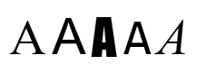

This document provides a checklist of internationalization-related considerations when developing a specification. Most checklist items point to detailed supporting information in other documents. Where such information does not yet exist, it can be given a temporary home in this document. The information in this document will change regularly as new content is added and existing content is modified in the light of experience and discussion.
This document provides advice to specification developers about how to incorporate requirements for international use. What is currently available here is expected to be useful immediately, but is still an early draft and the document is in flux, and will grow over time as knowledge applied in reviews and discussions can be crystallized into guidelines.
Developers of specifications need advice to ensure that what they produce will work for communities around the globe.
The Internationalization (i18n) WG tries to assist working groups by reviewing specifications and engaging in discussion. Often, however, such interventions come later in the process than would be ideal, or mean that the i18n WG has to repeat the same information for each working group it interacts with.
It would be better if specification developers could access a checklist of best practices, which points to explanations, examples and rationales where developers need it. Developers would then be able to build this knowledge into their work from the earliest stages, and could thereby reduce rework needed when the i18n WG reviews their specification.
This document contains the beginnings of a checklist, and points to locations where you can find explanations, examples and rationales for recommendations made. If there is no such other place, that extra information will be added to this document. It may also be used to develop ideas and organize them.
The guidelines in this document are not intended to be hard and fast requirements. This document will achieve a significant part of its purpose if, where you don't understand the guidelines or disagree with them, you contact the Internationalization WG to discuss what should be done.
In this document, the term natural language is usually used to refer to the portions of a document or protocol intended for human consumption. The term localizable text is used to refer to the natural language content of formal languages, protocol syntaxes and the like, as distinct from syntactic content or user-supplied values. See the [[I18N-GLOSSARY]] for definitions of these and other terms used by the Internationalization Working Group.
A checklist feature is provided with this page to help you review your spec for internationalization. The results of the review should be posted to a GitHub issue.
Follow these steps for each section that is relevant to your spec:
All additions of or changes to an Internationalization Considerations section MUST be reviewed by the Internationalization (i18n) WG.
If you create an internationalization considerations section, it MUST have the title Internationalization Considerations or Internationalization (i18n) Considerations.
Specifications are not required to include a special section or appendix describing internationalization considerations of their specification. In general, the Internationalization WG instead prefers that information about language, regional, or cultural variation, support, or adaptation appear in the body of the specification, closely associated with the relevant features.
However, there are a few cases in which you might consider providing a section like this. Consider including an internationalization considerations section when:
If you decide to create an Internationalization Considerations section, it will usually be as an appendix. However, the order and placement relative to other parts of your spec or to other appendices is up to you.
If you decide to create an Internationalization Considerations section, you need to mention it in your horizontal review request to the Internationalization WG. The review request template includes a checkbox which allows you to do this easily.
It should be possible to associate a language with any piece of localizable text or natural language content.
Where possible, there should be a way to label natural language changes in inline text.
Text is rendered or processed differently according to the language it is in. For example, screen readers need to be prompted when a language changes, and spell checkers should be language-sensitive. When rendering text a knowledge of language is need in order to apply correct fonts, hyphenation, line-breaking, upper/lower case changes, and other features.
For example, ideographic characters such as 雪, 刃, 直, 令, 垔 have slight but important differences when used with Japanese vs Chinese fonts, and it's important not to apply a Chinese font to the Japanese text, and vice versa when it is presented to a user.
Consider whether it is useful to express the [=intended linguistic audience=] of a resource, in addition to specifying the language used for text processing.
Language information for a given resource can be used with two main objectives in mind: for text-processing, or as a statement of the intended use of the resource. We will explain the difference below.
A language declaration that indicates the [=text-processing language=] for a range of text must associate a single language value with a specific range of text.
When specifying the text-processing language you are declaring the language in which a specific range of text is actually written, so that user agents or applications that manipulate the text, such as voice browsers, spell checkers, style processors, hyphenators, etc., can apply the appropriate rules to the text in question. So we are, by necessity, talking about associating a single language with a specific range of text.
It is normal to express a text-processing language as the default language, for processing the resource as a whole, but it may also be necessary to indicate where the language changes within the resource.
Use the HTML lang and XML xml:lang language attributes where appropriate to identify the text processing language, rather than creating a new attribute or mechanism.
lang attribute, while XML provides xml:lang which can be used in all XML formats. It's useful to continue using those attributes for relevant markup formats, since authors recognize them, as do HTML and XML processors.
It may also be useful to describe the language of a resource as a whole. This type of language declaration is called the intended linguistic audience of a resource. For example, such metadata may be used for searching, serving the right language version, classification, etc.
This type of language declaration differs from that of the text-processing declaration in that (a) the value for such declarations may be more than one language subtag, and (b) the language value declared doesn't indicate which bits of a multilingual resource are in which language.
It should be possible to associate a metadata-type language declaration (which indicates the intended use of the resource rather than the language of a specific range of text) with multiple language values.
The language(s) describing the intended use of a resource do not necessarily include every language used in a document. For example, many documents on the Web contain embedded fragments of content in different languages, whereas the page is clearly aimed at speakers of one particular language. For example, a German city-guide for Beijing may contain useful phrases in Chinese, but it is aimed at a German-speaking audience, not a Chinese one.
On the other hand, it is also possible to imagine a situation where a document contains the same or parallel content in more than one language. For example, a web page may welcome Canadian readers with French content in the left column, and the same content in English in the right-hand column. Here the document is equally targeted at speakers of both languages, so there are two audience languages. Another use case is a blog or a news page aimed at a multilingual community, where some articles on a page are in one language and some in another. In this case, it may make sense to list more than one language tag as the value of the language declaration.
Attributes that express the language of external resources should not use the HTML lang and XML xml:lang language attributes, but should use a different attribute when they represent metadata (which indicates the intended use of the resource rather than the language of a specific range of text).
xml:lang in XML document schemas – When should I use xml:lang and when should I define my own element or attribute for passing language values in an XML document schema (DTD)?
Using a different attribute to indicate the language of an external resource allows the attribute to specify more than one language. It also works better if the resource pointed to is not in a single language.
This distinction can be seen in HTML in the separation of the lang and hreflang attributes. The former indicates the language of the text within the HTML page; the latter is metadata indicating the expected language of a page that is linked to.
For a longer discussion of this see xml:lang in XML document schemas. This article talks specifically about xml:lang, but the concepts are applicable to other situations.
Values for language declarations must use BCP 47.
BCP 47 is the language tag system used by Internet and Web standards (and many other places). It defines a method of using subtags from an IANA registry to form a string which describes the language of content. The subtags in the registry are primarily based on (and maintain strict compatibility with) ISO and UN standards for identifying languages, scripts, regions, and countries. BCP47 also forms the basis for Unicode locales.
For an overview of the key features of BCP 47, see Language tags in HTML and XML.
Refer to BCP 47, not to its constituent parts, such as RFC 5646 or RFC 4647.
The link to and name of BCP 47 was created specifically so that there is an unchanging reference to the definition of Tags for the Identification of Languages. RFCs 1766, 3066, 4646 were previous (superseded) versions. The current version of BCP 47 is made up of two RFCs: 5646 and 4647.
Be specific about what level of conformance you expect for language tags: BCP 47 defines two levels of conformance, "valid" and "well-formed".
A well-formed BCP 47 language tag follows the syntax defined for a language tag: implementations check that each language tag consists of hyphen-separated subtags; each subtag has a specific length and specific content (letters, digits or specific combinations) depending on the placement in the tag. A valid BCP 47 language tag is well-formed but additionally ensures that only subtags that are listed in the IANA Subtag Registry are used. Note that the IANA Subtag Registry is frequently updated with new subtags.
Specifications may require implementations to check if language tags are "valid", but in most circumstances should only require that the language tags be "well-formed".
Most specifications are second-order consumers of language metadata – they are using data already provided in the document format (HTML lang, XML xml:lang, or the document format's language fields/attributes).
Generally most specifications are concerned with selecting resources (such as spell checkers, tokenizers, fonts, etc.) or with matching (selecting which string to show, for example) and don't directly care about the content of the language tag. Invalid-but-well-formed tags just don't match anything and usually fallback schemes provide some behavior that is appropriate.
There might be cases where a specification really wants implementation-level checking for validity. In those cases, the result of a tag failing to be valid has to be specified (should the application die, warn the user, etc.). It's also a problem that the registry is sizeable and changes over time, so each implementation is registry-version dependent. The changes over time are often minor, but real users will encounter interoperability issues if random (out of date) implementations of the specification reject language tags that have become valid at a later date.
In addition, BCP 47 has an extension mechanism which defines add-on subtag sequences. For example, one extension [[RFC6067]] (Unicode Locales, which uses the singleton -u), is commonly used for controlling the internationalization features of JavaScript (and has other uses). Validating these additional subtags is likely out of scope for most specifications.
Specifications should require content and content authors to use "valid" language tags.
Normative language regarding language tags might be different between content and implementation requirements. Specification authors need to carefully consider what conformance requirements and tests are needed for their specification and what implementations are required to do. One solution is to normatively require that "valid" language tags be used by content authors but only require implementations to check for "well-formed" language tags.
Specifications SHOULD refer to the IANA Language Subtag Registry instead of providing lists of codes extracted from ISO 639, ISO 3166, or other standards.
In the past, some of the standards used to provide subtags found in language tags were not freely or publicly available, so some specifications provided lists in order to help ensure interoperability. This is no longer necessary. As part of BCP 47, IANA maintains the language subtag registry, which is a publicly available, machine-readable list of valid subtags for use in constructing language tags. This registry is based on underlying standards, including the various parts of ISO 639 (639-1, 639-2, 639-3, etc.), ISO 15924 script codes, and ISO 3166 and UN M.49 region codes. The registry is actively maintained, stabilized, and comprehensive in ways that other lists found on the Internet might not be. Each of the subtag types is kept in sync with parent standards with the help and participation of those standards maintainers, so extracting or making your own list of codes or referring to ones found elsewhere can lead to maintenance problems or confusion.
Avoid creating a list of valid or supported language tags, language subtags, or [=locales=].
Making your own list of fully formed language tags will unnecessarily restrict the list of languages that can be used. In addition, locale data is always being expanded, so a list that describes support today will become outdated in the future. Restricting which tags or subtags are available to users conflicts with our goal of providing universal access.
Here we are talking about an independent unit of data that contains structured text. Examples may include a whole HTML page, an XML document, a JSON file, a WebVTT script, an annotation, etc.
[[[#lang_values]]].
The specification should indicate how to define the default text-processing language for the resource as a whole.
It often saves trouble to identify the language, or at least the default language, of the resource as a whole in one place. For example, in an HTML file, this is done by setting the lang attribute on the html element.
Content within the resource should inherit the language of the text-processing declared at the resource level, unless it is specifically overridden.
Consider whether it is necessary to have separate declarations to indicate the text-processing language versus metadata about the expected use of the resource.
In many cases a resource contains text in only one language, and in many more cases the language declared as the default language for text-processing is the same as the language that describes the metadata about the resource as a whole. In such cases it makes sense to have a single declaration.
It becomes problematic, however, to use a single declaration when it refers to more than one language unless there is a way to determine which one language should be used as the text-processing default.
If there is only one language declaration for a resource, and it has more than one language tag as a value, it must be possible to identify the default text-processing language for the resource.
[[[#lang_values]]].
The words block and/or chunk are used here to refer to a structural component within the resource as a whole that groups content together and separates it from adjacent content. Boundaries between one block and another are equivalent to paragraph or section boundaries in text, or discrete data items inside a file.
For example, this could refer to a block or paragraph in XML or HTML, an object declaration in JSON, a cue in WebVTT, a line in a CSV file, etc. Contrast this with inline content, which describes a range within a paragraph, sentence, etc.
The interpretation of which structures defined in a spec are relevant to these requirements may require a little consideration, and will depend on the format of the data involved.
By default, blocks of content should inherit any text-processing language set for the resource as a whole.
See [[[#lang_misc]]] for guidance related to the default text-processing language information.
It should be possible to indicate a change in language for blocks of content where the language changes.
In this section we refer to information that needs to be provided for a range of characters in the middle of a paragraph or string.
[[[#lang_values]]]
It should be possible to indicate language for spans of inline text where the language changes.
Where a switch in language can affect operations on the content, such as spell-checking, rendering, styling, voice production, translation, information retrieval, and so forth, it is necessary to indicate the range of text affected and identify the language of that content.
The information in this section is being developed in Requirements for Language and Direction Metadata in Data Formats [[STRING-META]]. That document is still being written, so these guidelines are likely to change at any time.
The exchange of data on the Web, to the degree possible, should use locale-neutral standardized formats. However, some data on the Web necessarily consists of natural language information intended for display to humans. This natural language information depends on and benefits from the presence of language and direction metadata for proper display. Along with support for Unicode, mechanisms for including and specifying the [=base direction=] and the natural language of spans of text are one of the key internationalization considerations when developing new formats and technologies for the Web.
The most basic best practice, which the Internationalization Working Group looks for in every specification, is:
For any string field containing natural language text, it MUST be possible to determine the language and string direction of that specific string. Such determination SHOULD use metadata at the string or document level and SHOULD NOT depend on heuristics.
[[[#bidi_strings]]].
Work on language and direction metadata for string formats is a work in progress. Specifications might need to include a note indicating the need for future adoption of metadata. Here is a prototype:
The field {fieldname} should follow the best practices found in Strings on the Web: Language and Direction Metadata [[STRING-META]]. This includes making use of any future standards which emerge regarding the reporting of string language and direction metadata.
Use field-based metadata or string datatypes to indicate the language and the [=string direction=] for individual localizable text values.
Individual data values can differ in language or direction from other values found in the same data file or document. Providing metadata values directly associated with each localizable text field allows for the metadata to be overridden appropriately and helps applications automate processing when assembling, extracting, forwarding, or otherwise processing each data field for use.
Specifications MAY define a mechanism to provide the default language and the default [=string direction=] for all strings in a given resource. However, specifications MUST NOT assume that a resource-wide default is sufficient. Even if a resource-wide setting is available, it must be possible to use string-specific metadata to override that default.
Many documents contain data in a single language. Providing a means of indicating the intended language audience, perhaps in a header, can reduce overall document size and complexity. However, the ability to override specific string values remains important, as it is always possible that some strings might not be available in the document language or when the base direction is not consistent with the default direction of other localizable text values in the document as a whole.
Specify that, in the absence of other information, the default direction and default language are unknown.
Specifications SHOULD be careful to distinguish syntactic content, including user-supplied values, from localizable text.
Specifications MUST NOT treat syntactic content values as "displayable".
Specifications SHOULD NOT specify or require the use of language metadata for fields that cannot contain natural language text.
Document formats on the Web consist of text. In most cases, data values in a given document format are meant to be representative and meaningful, not just arbitrary strings. The fact that a data value consists of, for example, an English keyword does not make the data value a natural language string meant for display as text (that is, the value is not localizable text). Such data values are part of the syntactic content of the document: not only do they not require language and direction metadata, but they should not be associated with such metadata.
For string values and string fields that are not localizable text, specifications SHOULD specify that the field is non-linguistic in nature and recommend the language tag zxx ("No linguistic content") be associated with each string value.
For string values and string fields that are known to contain localizable text but for which there is no possibility of language metadata from the underlying format, specifications SHOULD specify that the language of the content is unknown and recommend the language tag und ("Undetermined") be associated with each string. Specifications MAY also allow the use of heuristics or the inference of the language from other field values where appropriate.
Some string values depend on or are defined by existing protocols or formats. Often these strings are not associated with or do not provide language or direction metadata. For example, many HTTP headers define their contents as if they were not localizable text, even when, in some cases, they contain natural language text. Consuming specifications sometimes need to take a dependency on strings of this nature or define a format that describes one of these strings. In these cases there will be no language or direction metadata for consumers to associate with the string in the specification's data structure or document format, and any metadata that the specification's data structure or document format provides (when functioning as a producer) will not be serialized through the underlying format.
Specifications SHOULD NOT use the Unicode "language tag" characters (code points U+E0000 to U+E007F) for language identification.
The Unicode "language tag" characters are deprecated for use as language tags and there are many reasons why they are a poor solution to the language metadata problem in document formats and wire protocols. Specification authors are cautioned not to repurpose these characters or try to build new mechanisms for transmitting language information based on them.
Specifications SHOULD recommend the use of language indexing when localizable strings can be supplied in multiple languages for the same value.
Producers sometimes need to supply localized values for a given content item or data record. Sometimes this is done by language negotiation between the producer and consumer. Localization then takes place in the producer using the negotiated language to select the content returned.
Other times localization of a content item is done by having the producer return multiple language representations for the item and letting the consumer choose the value to display. This latter process is called language indexing. For more information about language indexing, see Localization Considerations in [[STRING-META]].
[[JSON-LD]] provides several mechanisms for satisfying some of the best practices found in this section:
For documents that use [[JSON-LD]], use of [[JSON-LD]] @context and the built-in @language attribute is RECOMMENDED as a document level default.
Specifications SHOULD use the i18n Namespace feature for RDF literals, as defined in [[JSON-LD]] 1.1.
Where the i18n Namespace is not available or is inappropriate to use, specifications SHOULD require [[JSON-LD]] plain string literals for natural language values to provide string-specific language information.
Reference BCP47 for language tag matching.
In addition to defining language tags (in RFC 5646) BCP 47 also contains an RFC on the topic of matching language tags to a [=language range=]. Just as it is most appropriate to refer to the stable identifier BCP 47 for the definition of language tags, it is best to refer to BCP 47 when referencing matching schemes found therein.
Unicode's [[CLDR]] project defines additional algorithms, rules and processes for matching language tags when used as [=locale=] identifiers.
It is important to establish direction for text written or mixed with right-to-left scripts. Characters in these scripts are stored in memory in the order they are typed and pronounced – called the logical order. The Unicode Bidirectional Algorithm (UBA) provides a lot of support for automatically rendering a sequence of characters stored in logical order so that they are visually ordered as expected. Unfortunately, the UBA alone is not sufficient to correctly render bidirectional text, and additional information has to be provided about the default directional context to apply for a given sequence of characters.
The basic requirements are as follows.
It must be possible to indicate [=base direction=] for each individual paragraph-level item of natural language text that will be read by someone.
A special case of the above applies to [=natural language=] string values in data structures and document formats:
For any string field containing [=natural language=] text, it MUST be possible to determine the language and [=string direction=] of that specific string. Such determination SHOULD use metadata at the string or document level and SHOULD NOT depend on heuristics.
It must be possible to indicate base direction changes for embedded runs of inline bidirectional text for all localizable text.
Annotating right-to-left text must require the minimum amount of effort for people who work natively with right-to-left scripts.
Requiring a speaker of Arabic, Divehi, Hebrew, Persian, Urdu, etc. to add markup or control characters to every paragraph or small data item they write is far too much to be manageable. Typically, the format should establish a default direction and require the user to intervene only when exceptions have to be dealt with.
In this section we try to set out some key concepts associated with text direction, so that it will be easier to understand the recommendations that follow.
In order to correctly display text written in a 'right-to-left' script or left-to-right text containing bidirectional elements, it is important to establish the base direction that will be used to dictate the order in which elements of the text will be displayed.
If you are not familiar with what the Unicode Bidirectional Algorithm (UBA) does and doesn't do, and why the base direction is so important, read Unicode Bidirectional Algorithm basics.
In this section, the word paragraph indicates a run of text followed by a hard line-break in plain text, but may signify different things in other situations. In CSV it equates to 'cell', so a single line of comma-separated items is actually a set of comma-separated paragraphs. In HTML it equates to the lowest level of block element, which is often a p element, but may be things such as div, li, etc., if they only contain text and/or inline elements. In JSON, it often equates to a quoted string value, but if a string value uses markup then paragraphs are associated with block elements, and if the string value is multiple lines of plain text then each line is a paragraph.
The term metadata is used here to mean information which could be an annotation or property associated with the data, or could be markup in scenarios that allow that, or could be a higher-level protocol, etc.
There are a number of possible ways of setting the base direction.
ltr, rtl or auto.
dir=auto on an HTML element.)dir attributes in your HTML file.)dir attribute on the html tag in HTML. Another example would be a subtitling file containing many cues, all written in Arabic; it would be best to allow the author to say at the start of the file that the default is RTL for all cue text. There should always be a way to override the direction information for a specific paragraph where needed.auto, since HTML specifies a default direction.)
When capturing text input by a user it is usually necessary to understand the context in which the user was inputting the data to determine the base direction of the input. In HTML, for example, this may be set by the direction inherited from the html tag, or by the user pressing keys to set the base direction for a form field. It is then necessary to find some way of storing the information about base direction or associating it with the string when rendered. Typically, in this situation, any direction changes internal to the string being input are handled by the user and will be captured as part of the string.
Embedded ranges of text within a single paragraph may need to have a different base direction. For example,
"The title was '!NOITASILANOITANRETNI'."
where the span within the single quotes is in Hebrew/Arabic/Divehi, etc., and needs to have a [=RTL=] base direction, instead of the [=LTR=] base direction of the surrounding paragraph, in order to place the exclamation mark correctly.
If markup is available to the content author, it is likely to be easier and safer to use markup to indicate such inline ranges (see below). In HTML you would usually use an inline element with a dir attribute to establish the base direction for such runs of text. If you can't mark up the text, such as in HTML's title element, or any environment that handles only plain text content, you have to resort to Unicode's paired control characters to establish the base direction for such an internal range.
Furthermore, inline ranges where the base direction is changed should be [=bidi isolated=] from surrounding text, so that the [=Unicode Bidirectional Algorithm=] doesn't produce incorrect results ("[=spillover=]") due to interference across boundaries.
This means that if a content author is using Unicode control codes they should use the isolating controls RLI/LRI/FSI…PDI rather than the embedding controls RLE/LRE…PDF.
Reasons to avoid relying on control characters to set direction include the following:
The last two items above may also hold for markup, but implementers often support included markup better than included control codes.
Don't expect users to add control codes at the start and end of every paragraph. That's far too much work.
A word about the Unicode characters U+200F RIGHT-TO-LEFT MARK (RLM), U+200E LEFT-TO-RIGHT MARK (LRM), and U+061C ARABIC LETTER MARK (ALM) is warranted at this point.
The first point to be clear about is that these three characters do not establish the base direction for a range of text. They are simply invisible characters with strong directional properties.
Recalling an earlier example, this means that you cannot use RLM, for example, to make the text W3C appear to the left of the Hebrew text. Only using metadata or paired control characters results in the correct display.
Of course, if you are detecting base direction using first-strong heuristics (such as dir="auto" in HTML), then inserting an RLM, ALM, or LRM can be useful for influencing the base direction detected where the text in question begins with something that would otherwise give the wrong result.
Remember that if metadata is used to set the base direction, the strong directional formatting character is ignored, unless the metadata specifically says that first-strong heuristics should be used.
Finally, a note about the use of U+061C ARABIC LETTER MARK (ALM). This character is used to influence the display of sequences of numbers in Arabic script text in cases where no Arabic letters occur before the number.
Do not assume that direction can be determined from language information.
Can we derive base direction from language?, W3C article.
The following are all reasons you cannot use language tags to provide information about base direction:
auto value with language tags.Suppress-Script: Hebr). Languages, such as Persian, that are usually written in a RTL script may be written in transcribed form, and it's not possible to guarantee that the necessary script tag would be present to carry the directional information. In summary, you won't be able to rely on people supplying script tags as part of the language information in order to influence direction.Values for the default base direction should include left-to-right, right-to-left, and auto.
The auto value allows automatic detection of the base direction for a piece of text. For example, the auto value of dir in HTML looks for the first strong directional character in the text, but ignores certain items of markup also, to guess the base direction of the text. Note that automatic detection algorithms are far from perfect. First-strong detection is unable to correctly identify text that is really right-to-left, but that begins with a strong LTR character. Algorithms that attempt to judge the base direction based on contents of the text are also problematic. The best scenario is one where the base direction is known and declared.
This section is about defining approaches to bidi handling that work with resources that organize content using markup. Some of the recommendations are different from those for handling strings on the Web (see [[[#bidi_strings]]]).
The spec should indicate how to define a default base direction for the resource as a whole, ie. set the overall base direction.
The default base direction, in the absence of other information, should be auto.
The content author must be able to indicate parts of the text where the base direction changes. At the block level, this should be achieved using attributes or metadata, and should not require the content author to use Unicode control characters to control direction.
Relying on Unicode control characters to establish direction for every block is not feasible because line breaks terminate the effect of such control characters. It also makes the data much less stable, and unnecessarily difficult to manage if control characters have to appear at every point where they would be needed.
It must be possible to also set the direction for content fragments to auto. This means that the base direction will be determined by examining the content itself.
Estimation algorithms, in Additional Requirements for Bidi in HTML & CSS.
A typical approach here would be to set the direction based on the first strong directional character outside of any markup, but this is not the only possible method. The algorithm used to determine directionality when direction is set to auto should match that expected by the receiver.
The first-strong algorithm looks for the first character in the paragraph with a strong directional property according to the Unicode definitions. It then sets the base direction of the paragraph according to the direction of that character.
Note that the first-strong algorithm may incorrectly guess the direction of the paragraph when the first character is not typical of the rest of the paragraph, such as when a RTL paragraph or line starts with a LTR brand name or technical term.
For additional information about algorithms for detecting direction, see Estimation algorithms in the document where this was discussed with reference to HTML.
If the overall base direction is set to auto for plain text, the direction of content paragraphs should be determined on a paragraph by paragraph basis.
To indicate the sides of a block of text relative to the start and end of its contained lines, use 'block-start' and 'block-end', rather than 'top' and 'bottom'.
To indicate the start/end of a line you should use 'start' and 'end', or 'inline-start' and 'inline-end', rather than 'left' and 'right'.
Provide dedicated attributes for control of base direction and bidirectional overrides; do not rely on the user applying style properties to arbitrary markup to achieve bidi control.
CSS vs. markup for bidi support, W3C article.
For example, HTML has a dir attribute that is capable of managing base direction without assistance from CSS styling. XML formats should define dedicated markup to represent directional information, even if they need CSS to achieve the required display, since the text may be used in other ways.
Style sheets such as CSS may not always be used with the data, or carried with the data when it is syndicated, etc. Directional information is fundamentally important to correct display of the data, and should be associated more closely and more permanently with the markup or data.
The information in this section is pulled from Strings on the Web: Language and Direction Metadata. That document is still being written, so these guidelines are likely to change at any time.
Provide metadata constructs that can be used to indicate the base direction of any natural language string.
Best Practices, Recommendations, and Gaps, in Strings on the Web: Language and Direction Metadata
Specify that consumers of strings should use heuristics, preferably based on the Unicode Standard first-strong algorithm, to detect the base direction of a string except where metadata is provided.
Best Practices, Recommendations, and Gaps, in Strings on the Web: Language and Direction Metadata
Where possible, define a field to indicate the default direction for all strings in a given resource or document.
Best Practices, Recommendations, and Gaps, in Strings on the Web: Language and Direction Metadata
Do NOT assume that a creating a document-level default without the ability to change direction for any string is sufficient.
Best Practices, Recommendations, and Gaps, in Strings on the Web: Language and Direction Metadata
If metadata is not available due to legacy implementations and cannot otherwise be provided, specifications MAY allow a [=string direction=] to be interpolated from available language metadata.
Best Practices, Recommendations, and Gaps, in Strings on the Web: Language and Direction Metadata
Specifications MUST NOT require the production or use of paired bidi controls.
Best Practices, Recommendations, and Gaps, in Strings on the Web: Language and Direction Metadata
'Inline text' here has a readily understandable meaning in markup. It also applies to strings (eg. in JSON, CSV, or other plain text formats), meaning runs of characters which don't include all the characters in the string.
It must be possible to indicate spans of inline text where the base direction changes. If markup is available, this is the preferred method. Otherwise your specification must require that Unicode control characters are recognized by the receiving application, and correctly implemented.
It must be possible to also set the direction for a span of inline text to auto, which means that the base direction will be determined by examining the content itself. A typical approach here would be to set the direction based on the first strong directional character outside of any markup.
The first-strong algorithm looks for the first character in the paragraph with a strong directional property according to the Unicode definitions. It then sets the [=base direction=] of the paragraph according to the direction of that character.
Note that the first-strong algorithm may incorrectly guess the direction of the paragraph when the first character is not typical of the rest of the paragraph, such as when an [=RTL=] paragraph or line starts with a [=LTR=] brand name or technical term.
For additional information about algorithms for detecting direction, see Estimation algorithms in the document where this was discussed with reference to HTML.
If users use Unicode bidirectional control characters, the isolating RLI/LRI/FSI with PDI characters must be supported by the application and recommended (rather than RLE/LRE with PDF) by the spec.
Use of RLM/LRM should be appropriate, and expectations of what those controls can and cannot do should be clear in the spec.
The Unicode bidirectional control characters U+200F RIGHT-TO-LEFT MARK and U+200E LEFT-TO-RIGHT MARK are not sufficient on their own to manage bidirectional text. They cannot produce a different base direction for embedded text. For that you need to be able to indicate the start and end of the range of the embedded text. This is best done by markup, if available, or failing that using the other Unicode bidirectional controls mentioned just above.
For markup, provide dedicated attributes for control of base direction and bidirectional overrides; do not rely on the user applying style properties to arbitrary markup to achieve bidi control.
For markup, allow bidi attributes on all inline elements in markup that contain text.
For markup, provide attributes that allow the user to (a) create an isolated or embedded base direction or (b) override the bidirectional algorithm altogether. Such attributes should allow the user to set the direction to LTR, RTL, or Auto in either of these two scenarios.
The word character means different things in different contexts: it can variously refer to the visual, logical, or byte-level representation of a given unit of text. This makes the term too imprecise to use casually in specifications. Understanding how text is defined and encoded in computing systems, along with the associated terminology used to make such specification unambiguous, is thus a necessary prerequisite to discussing the processing of string data.
The developers of specifications, and the developers of software based on those specifications, are likely to be more familiar with usages of the term 'character' they have experienced and less familiar with the wide variety of usages in an international context. Furthermore, within a computing context, characters are often confused with related concepts, resulting in incomplete or inappropriate specifications and software.
When specifying characters, strings, or any process that works with characters or strings, use the most specific appropriate terminology. Unless you have a reason not to, define [=code point=] to mean a [=Unicode Scalar Value=] and use that term in preference to 'character'.
Use the most appropriate terms found in this section. Here are some other recommended terms:
| Type of unit | Instead of character use... | Description |
|---|---|---|
| Text units | [=code point=], [=Unicode code point=], [=Unicode Scalar Value=] |
Logical units of text, without regard for [=character encoding form=] or any particular serialization. |
| Storage, processing, serialization, encoding | [=code unit=] | Units of encoding and serialization. [=Code units=] are typically specified in wire and file formats, low-level text processing. Depends on the [=character encoding=] used (preferably UTF-8 or UTF-16). |
| Visual units, user-perceived characters, selection/segmentation | [=grapheme cluster=], typographic character unit |
Breaking text into visual units, most visual selection and truncation. This recommendation has the most nuance. |
| Elements of fonts | [=glyph=] | Individual display values. Use this term primarily when talking about the contents of a font. |
If you cannot avoid using the term 'character', you MUST include a clear definition of the term.
Here is a brief glossary of core terminology:
[[Unicode]] [D7] defines an abstract character as: A unit of information used for the organization, control, or representation of textual data.
This definition is necessarily vague and goes on to note that an abstract character does not have a specific concrete form (and thus not to be confused with a [=glyph=] in a font) nor what a user might think of as a "character" (and thus not to be confused with a [=grapheme=]). Avoid using this term in your own specification.
A character set is an unordered collection of [=abstract characters=] (in other words, it is a set) which can be used together to encode text. The collection of characters in a [=character set=] is sometimes called its repertoire. Most [=character sets=] support only a specific range of languages or scripts.
[[Unicode]], sometimes called the [=Universal Character Set=], includes all of the characters currently used to encode text in computer systems, including historical or extinct writing systems as well as modern usage, private use, typesetting symbols, and other things, such as the emoji. All other character sets are defined subsets of Unicode. Annual revisions extend the set of characters encoded.
The [[Unicode]] Standard defines much more than just a [=character set=]. It also defines many of the properties, algorithms, and other details for the processing and presentation of text.
A [=code point=] is a unique identifier for an [=abstract character=] in a [=character set=]. For a [=character set=] to be useful, it needs to unambiguously identify each character. In most [=character sets=], the [=code point=] is a number (or set of numbers) that describe the location of the character in the table or chart of characters in the set.
In [[Unicode]], a [=code point=] is an integer between 0x0000 and 0x10FFFF inclusive. It is written in hexadecimal notation (see [[[#char_ref]]]). A [=Unicode code point=] is sometimes called a [=Unicode Scalar Value=]. Each code point that has been assigned to an abstract character in Unicode is also given a unique, immutable name. Unicode also associates various properties with each assigned character. Many of these properties appear in the Unicode Character Database (or UCD]) [[UAX44]], while others are assigned in ancillary files or tables.
[[Unicode]] [D11] defines an encoded character as An association (or mapping) between an [=abstract character=] and a [=code point=]
. The term [=code point=], or, when greater specificity is needed, [=Unicode code point=] or [=Unicode Scalar Value=], is generally preferred for specifications.
[[[#char_ref]]]
[=Code points=] are not used directly in the storage and interchange of characters in software. Instead, there exist various schemes for encoding and processing the characters they represent or for converting from one representation to another.
A [=code unit=] is a unit of physical storage and information interchange, forming the basis for computer processing, storage, and communication. The most familiar [=code unit=] is called a byte or octet, and consists of 8 bits.
Different sized [=code units=] are used by different runtime environments. Other common sizes include 16- or 32-bit units. On the Web, for example, 16-bit code units are used by the [[DOM]], JavaScript, and the various string types in [[INFRA]]. These specifications use 16-bit code units processed according to the rules of the UTF-16 [=character encoding=] of [[Unicode]].
[[[#char_string]]]
A [=character encoding form=] (sometimes just referred to as a [=character encoding=]) is the set of rules for encoding from [=code points=] in a [=character set=] to the [=code units=] used to store and process text; or for decoding from [=code units=] back into [=code points=]. Non-Unicode character encoding forms are referred to collectively as [=legacy character encodings=].
UTF-8 is a multibyte [=character encoding form=] of [[Unicode]]. It is the most common [=character encoding=] used on the Web. UTF-8 uses 8-bit bytes as its [=code unit=]. UTF-8 is a variable-width encoding, in that it uses different numbers of [=code units=] depending on the [=code point=] being encoded.
The familiar 7-bit ASCII characters (the code points from U+0000 to U+007F) take one byte to encode in UTF-8.
| Character | Code Point | UTF-8 Code Units (bytes) |
|---|---|---|
| A | U+0041 |
0x41 |
Code points from U+0080 and U+07FF require two bytes.
| À | U+00C0 |
0xC3 0x80 |
| न | U+0928 |
0xE0 0xA4 0xA8 |
And, finally, code points from U+10000 through U+10FFFF take four bytes.
| 👪 | U+1F46A |
0xF0 0x9F 0x91 0xAA |
Specifications, software, and content MUST NOT require or depend on a one-to-one relationship between characters ([=code points=]) and units of physical storage ([=code units=]).
Units of storage C009, in Character Model for the World Wide Web 1.0: Fundamentals
Specifications, software, and content MUST NOT require or depend on a one-to-one mapping between [=code points=] and units of presentation (such as [=grapheme clusters=], [=glyphs=], or typographic character units).
Units of visual rendering C002, in Character Model for the World Wide Web 1.0: Fundamentals.
Examples of Characters, Keystrokes and Glyphs, in Character Model for the World Wide Web 1.0: Fundamentals.
In this document, a visual text unit refers to a single unit of the visible text as perceived by a user. This can be on a screen or in other media, such as printed on paper or written on the back of a napkin. This term is necessarily imprecise, as user perception frequently depends on familiarity with the script and writing system, particularly when it comes to writing systems that use a combination of combining marks, complex positioning, or complex shaping based on context. Avoid using this term in your own specification.
A [=grapheme cluster=] is the computed approximation of a [=visual text unit=] in encoded text, that is, it is a sequence of [=code points=] that are expected to form a single [=visual text unit=] from the user's point of view. [[Unicode]] provides a way to compute these boundaries to assist in processing text, since, for many text operations, such a sequence should be processed as a single, indivisible textual unit. For example, when cursoring across text, the cursor should "jump across" or select the entire visual text unit (and its underlying code points) together. It shouldn't be possible to cursor into the "middle" of a visual text unit. (Unless otherwise specified, the term [=grapheme cluster=] in this document refers to what Unicode Text Segmentation [[UAX29]] refers to as an "extended default grapheme cluster".)
Note that some text operations do allow users to interact with individual [=code points=] within a [=grapheme cluster=]. For example, some editing functions, such as backspacing, progressively delete characters from the end of a [=visual text unit=] (to allow users to correct misspellings without having the erase the entire cluster, for example).
The term typographic character unit is defined by [[CSS]], where it is used to refer to different types of [=code point=] sequences that should be treated as "unitary" for specific operations. Sometimes this aligns with the term [=grapheme cluster=], while other times it is distinct. Use this term only if you understand the context and usage.
A [=glyph=] is the visual representation of a character (or sequence of characters) when rendered by a particular [=font=]. Glyphs do not always have a 1:1 relationship to [=abstract characters=]. They can represent part of a character or a combination of several characters. Different [=glyphs=] can represent the same [=code point=]. For example, these are all different [=glyphs=] for AU+0041 LATIN CAPITAL LETTER A:

A font is thus a collection of specific glyphs used to render text.
Specifications, software, and content MUST NOT require or depend on a one-to-one correspondence between characters and the sounds of a language.
Units of aural rendering C001, in Character Model for the World Wide Web 1.0: Fundamentals
In some scripts, characters have a close relationship to phonemes (a phoneme is a minimally distinct sound in the context of a particular spoken language), while in others they are closely related to meanings. Even when characters (loosely) correspond to phonemes, this relationship may not be simple, and there is rarely a one-to-one correspondence between character and phoneme.
The following are examples of mismatches between the term character and units of sound:
Specifications and software MUST NOT require nor depend on a single keystroke resulting in a single character, nor that a single character be input with a single keystroke (even with modifiers), nor that keyboards are the same all over the world.
Units of input C005, in Character Model for the World Wide Web 1.0: Fundamentals.
Examples of Characters, Keystrokes and Glyphs, in Character Model for the World Wide Web 1.0: Fundamentals.
In keyboard input, it is not always the case that keystrokes and input characters correspond one-to-one. A limited number of keys can fit on a keyboard. Some keyboards will generate multiple [=code points=] from a single keypress. In other cases ('dead keys') a key will generate no characters, but affect the results of subsequent keypresses. Many writing systems have far too many characters to fit on a keyboard and must rely on more complex input methods, which transform keystroke sequences into character sequences. Other languages may make it necessary to input some characters with special modifier keys.
See Examples of Characters, Keystrokes and Glyphs for examples of non-trivial input.
[[[#char_indexing]]].
[[[#char_def]]].
A string is usually understood to be a sequence of 'characters'. Because [[Unicode]] is fundamental to understanding and working with text, including text that uses legacy character encodings, the basic definition of a string depends on Unicode and its concept of an [=encoded character=]. Specifically:
A string is a well-formed sequence of zero or more Unicode Scalar Values.
Because there are multiple ways of working with strings, different definitions of "string" have evolved to support the needs of different specifications. Be sure to understand your specification's needs and use the most appropriate and precise definition.
On the Web, there are three types of strings:
One difference between these different string types is how surrogate code points are handled. Note the difference between a code point (which represents a Unicode Scalar Value, i.e. a character) and a code unit (a unit of encoding in a character encoding form).
The UTF-16 character encoding form uses 16-bit code units. Characters whose scalar values require more than 16-bits are encoded using a pair of surrogate code units: a "low surrogate" (in the range U+D800-U+DBFF) followed by a "high surrogate" (in the range U+DC00-U+DFFF). Unicode reserves the code points in these ranges as non-characters so that there is no confusion between the code units in UTF-16 and normal text.
In a {{USVString}}, isolated surrogate code points are invalid and implementations are required to replace any found in a string with the Unicode replacement character (�U+FFFD REPLACEMENT CHARACTER). For strings whose most common algorithms operate on scalar values (such as percent-encoding), or for operations which can’t handle surrogates in input (such as APIs that pass strings through to native platform APIs), {{USVString}} should be used. Any of these references are equivalent to this:
In a {{DOMString}}, unpaired surrogate code units can appear in a string. Most string operations don’t need to interpret the code units inside of strings. Specifying {{DOMString}} means that implementations are not required to validate the contents of the string, making this the ideal string type for most data structures, formats, or APIs. The [[DOM]] and JavaScript strings use {{DOMString}} as their string type and the [[INFRA]] standard defines the term 'string' to mean a {{DOMString}}:
A string is a sequence of unsigned 16-bit integers, also known as code units.
[[INFRA]]'s use of the term code unit refers specifically to the UTF-16 character encoding's code units, rather than the more general definition of a code unit that can refer to different size values, such as bytes, in any character encoding form.
A {{ByteString}} depends on the character encoding form used to encode characters into bytes. Legacy character encodings do not have a concept of "surrogates", so there is generally no way to encode a surrogate code point. Valid UTF-8 does not permit surrogate code points: these are replaced by �U+FFFD REPLACEMENT CHARACTER when encoding text to or decoding text from UTF-8. When converting UTF-16 to UTF-8, any surrogate pairs are transformed into the proper UTF-8 byte sequence encoding the specific scalar value.
Use a {{DOMString}} when defining document formats or the wire format of a protocol, or for any process pertaining to the [[DOM]], or which defines strings as opaque values whose individual character contents are not meant to be evaluated. (This list of uses is not exhaustive.)
Definition of string in [[INFRA]]
IDL String Types in Web Platform Design Principles [[DESIGN-PRINCIPLES]]
String concepts, C012, in Character Model for the World Wide Web: Fundamentals.
Use a {{USVString}} when defining an algorithm that iterates over the code points in a string. Use {{USVString}} for any process which involves UTF-8 encode or for anywhere in which an unpaired surrogate code point would produce an error.
Scalar value string definition in [[INFRA]]
Avoid mixing {{DOMString}} and {{USVString}} in a single document or protocol operation. Often you will choose a {{DOMString}} over a {{USVString}}, since the latter requires extra processing that does not benefit most document formats or protocols.
[[[#char_choosing]]] for additional best practices related to [=character encodings=].
Strings that are part of a legacy protocol or format, in Strings on the Web: Language and Direction Metadata [[STRING-META]]
Prior to the widespread adoption of Unicode, it was common to define a string as a byte string. Such a string is simply a sequence of byte values rather than a sequence of characters or [=code points=]. A familiar manifestation of byte strings is a char* in the C programming language.
Processing or interpreting a byte string depends on the [=character encoding form=]. Many [=legacy character encodings=] are stateful: processing such encodings often requires starting at the beginning of the byte buffer, so that character state is retained and the [=abstract character=] can be decoded, processed, or modified successfully. A given byte value in such an encoding might mean different things depending on the bytes adjacent to it. For example, the exact same byte value might stand alone to represent a character or, depending on the preceding bytes, be part of a multibyte sequence that represents some different character. The rules for determining how to interpret each byte or byte sequence are different for different [=legacy character encodings=]. Processing a byte string using the wrong [=character encoding=] results in malformed characters (an effect sometimes called [=mojibake=]).
String concepts in [[[CHARMOD]]])
UTF-8 is the preferred [=character encoding=] for wire and document formats on the Web [[ENCODING]] or the Internet in general [[RFC3629]]. When content is encoded in UTF-8, there is rarely a reason to interact with it as a byte sequence. Most Web APIs and interfaces are more concerned with the [=code point=] sequence, since that represents the characters in question, rather than the specific byte values.
Sometimes specifications do need to deal with the storage, interpretation, and manipulation of byte values. In particular, many document formats and protocols were defined around the use of 7-bit [[ASCII]] bytes, while allowing the inclusion or interchange of non-ASCII data values via the use of various character or data encoding schemes. Sometimes this is done by designating a [=character encoding form=], such as with the charset parameter of the text media types. Or it might be done by encoding byte values using some special syntax, an example of which would be [=percent encoding=].
The prevalence of UTF-8, including as the preferred and default [=character encoding form=], diminishes the need for most specifications to access or manipulate underlying byte values. UTF-8 is designed such that 7-bit ASCII text is also valid UTF-8, which can be important when dealing with encoding or decoding formats based on ASCII.
Specify {{DOMString}} or, rarely, {{USVString}} for fields in protocols or document formats defined using bytes unless there is some reason to interact with specific bytes values or for which the UTF-8 [=character encoding=] cannot be assumed.
If the field in question is meant to be treated as a string, working with Unicode characters will be more reliable than trying to work with the byte values directly. The data encoded into these fields will be deserialized from the wire format into your local in-memory string representation, such as the [[DOM]], JavaScript strings, or your platform's native Unicode string type. Later it will need to be serialized into the wire format using some [=character encoding form=] (usually—and preferably—UTF-8).
Specify {{Uint8Array}} when working with byte sequences, such as for data that does not contain text, or for byte sequences representing text for which processing is never required (such as when copying buffers).
Specify {{ByteString}} in the rare cases where the specification needs to work with strings which are encoded using bytes and for which the conversion to or from Unicode would be inappropriate.
IDL String Types in Web Platform Design Principles [[DESIGN-PRINCIPLES]]
{{ByteString}} isn’t a general-purpose string type. Don't use it to define data structures in [[WebIDL]].
[[[#char_ranges]]].
Textual data objects defined by protocol or format specifications MUST be in a single character encoding.
Reference Processing Model C013, in Character Model for the World Wide Web: Fundamentals
All specifications that involve processing of text MUST specify the processing of text according to the Reference Processing Model described by the rest of the recommendations in this list.
Reference Processing Model C014, in Character Model for the World Wide Web: Fundamentals
Specifications MUST define text in terms of Unicode characters, not bytes or glyphs.
Reference Processing Model C014, in Character Model for the World Wide Web: Fundamentals
For their textual data objects specifications MAY allow use of any character encoding which can be transcoded to a Unicode encoding form.
Reference Processing Model C014, in Character Model for the World Wide Web: Fundamentals
Specifications MAY choose to disallow or deprecate some character encodings and to make others mandatory. Independent of the actual character encoding, the specified behavior MUST be the same as if the processing happened as follows: (a) The character encoding of any textual data object received by the application implementing the specification MUST be determined and the data object MUST be interpreted as a sequence of Unicode characters - this MUST be equivalent to transcoding the data object to some Unicode encoding form, adjusting any character encoding label if necessary, and receiving it in that Unicode encoding form, (b) All processing MUST take place on this sequence of Unicode characters, (c) If text is output by the application, the sequence of Unicode characters MUST be encoded using a character encoding chosen among those allowed by the specification.
Reference Processing Model C014, in Character Model for the World Wide Web: Fundamentals
If a specification is such that multiple textual data objects are involved (such as an XML document referring to external parsed entities), it MAY choose to allow these data objects to be in different character encodings. In all cases, the Reference Processing Model MUST be applied to all textual data objects.
Reference Processing Model C014, in Character Model for the World Wide Web: Fundamentals
[[[#char_pua]]].
Specifications SHOULD NOT arbitrarily exclude code points from the full range of Unicode code points from U+0000 to U+10FFFF inclusive.
Reference Processing Model C070, in Character Model for the World Wide Web: Fundamentals.
Specifications MUST NOT allow code points above U+10FFFF.
Reference Processing Model C077, in Character Model for the World Wide Web: Fundamentals.
Specifications SHOULD NOT allow the use of codepoints reserved by Unicode for internal use.
Reference Processing Model C079, in Character Model for the World Wide Web: Fundamentals.
Specifications MUST NOT allow the use of unpaired surrogate code points.
Reference Processing Model C078, in Character Model for the World Wide Web: Fundamentals.
A "surrogate code point" refers here to the use of character values in the range U+D800 through U+DFFF inclusive. These code points are reserved to allow the UTF-16 character encoding to address supplementary characters. Surrogates are always used in pairs and only appear when the UTF-16 encoding is being used. A single surrogate code point is referred to as an "unpaired surrogate" and should never be used.
Specifications SHOULD exclude compatibility characters in the syntactic elements (markup, delimiters, identifiers) of the formats they define.
Compatibility and Formatting Characters C050, in Character Model for the World Wide Web: Fundamentals.
Specifications SHOULD allow the full range of Unicode for user-defined values.
Unicode case-insensitive matching, in Character Model for the World Wide Web: Fundamentals.
[[[#char_ranges]]].
Specifications MUST NOT require the use of private use area characters with particular assignments.
Private use code points, C038, in Character Model for the World Wide Web: Fundamentals
Specifications MUST NOT require the use of mechanisms for defining agreements of private use code points.
Private use code points, C039, in Character Model for the World Wide Web: Fundamentals
Specifications and implementations SHOULD NOT disallow the use of private use code points by private agreement.
Private use code points, C040, in Character Model for the World Wide Web: Fundamentals
Specifications MAY define markup to allow the transmission of symbols not in Unicode or to identify specific variants of Unicode characters.
Private use code points, C041, in Character Model for the World Wide Web: Fundamentals
Specifications SHOULD allow the inclusion of or reference to pictures and graphics where appropriate, to eliminate the need to (mis)use character-oriented mechanisms for pictures or graphics.
Private use code points, C068, in Character Model for the World Wide Web: Fundamentals
Specify UTF-8 for all document formats, protocols, or serialization forms unless you have a good reason not to.
When specifying the serialization of text, whether it be in a file, format, or protocol, UTF-8 is the best choice for nearly all applications.
For all new formats or protocols or where a specification can safely do so, specifications MUST define UTF-8 as the only permitted [=character encoding form=].
New protocols and formats, as well as existing formats deployed in new contexts, are required to use the UTF-8 character encoding. This policy applies to IETF and Web standards and is articulated in [[RFC2277]], [[RFC3629]], [[Encoding]], [[design-principles]], and many more. The only specifications that need legacy character encodings are those that work with older protocols or formats and even there UTF-8 is strongly recommended.
Specifications that allow multiple [=character encoding forms=] MUST provide character encoding identification mechanisms such that the encoding of text can be reliably identified.
Choice and Identification of Character Encodings, C015, in Character Model for the World Wide Web: Fundamentals
When basing a protocol, format, or API on a protocol, format, or API that already has rules for choosing, applying, or labeling the character encoding, specifications SHOULD use the existing rules rather than change these rules.
Choice and Identification of Character Encodings, C017, in Character Model for the World Wide Web: Fundamentals
The above needs more work to incorporate the guidance to use UTF-8 when the protocol/format is used in a new context.
Specifications SHOULD avoid using the terms 'character set' and 'charset' to refer to a character encoding, except when the latter is used to refer to the MIME charset parameter or its IANA-registered values. The terms [=character encoding=] or [=character encoding form=] are RECOMMENDED.
Mandating a unique character encoding, C020, in Character Model for the World Wide Web: Fundamentals
Is the above MUSTard needed?
If a specification permits [=legacy character encodings=], it SHOULDMUST restrict the set of [=character encodings=] to those listed in the [[[Encoding]]] in the section "Names and Labels". Other encodings SHOULD NOT be used, except by private agreement.
Character encoding identification, C021, in Character Model for the World Wide Web: Fundamentals
Character encoding identification, C022, in Character Model for the World Wide Web: Fundamentals
Character encoding identification, C023, in Character Model for the World Wide Web: Fundamentals
Specifications MUST NOT propose the use of heuristics to determine the encoding of data.
Character encoding identification, C028, in Character Model for the World Wide Web: Fundamentals
Specifications MUST define conflict-resolution mechanisms (e.g. priorities) for cases where there is multiple or conflicting information about character encoding.
Character encoding identification, C028, in Character Model for the World Wide Web: Fundamentals
Specifications should provide a mechanism for escaping characters, particularly those which are invisible or ambiguous.
Using character escapes in markup and CSS, W3C article.
It is generally recommended that character escapes be provided so that difficult to enter or edit sequences can be introduced using a plain text editor. Escape sequences are particularly useful for invisible or ambiguous Unicode characters, including zero-width spaces, soft-hyphens, various bidi controls, mongolian vowel separators, etc.
For advice on use of escapes in markup, but which is mostly generalisable to other formats, see Using character escapes in markup and CSS.
Specifications SHOULD NOT invent a new escaping mechanism if an appropriate one already exists.
Character Escaping, C042, in Character Model for the World Wide Web: Fundamentals
Here are some examples of common escaping mechanisms found on the Web or in common programming languages. The example character here is 😽U+1F63D KISSING CAT FACE WITH CLOSED EYES.
| Found In | Type | Example | Description |
|---|---|---|---|
| HTML, XML | Hex NCRs | 😽 |
Hexadecimal encoding of the Unicode code point |
| Decimal NCRs | 😽 |
Decimal encoding of the Unicode code point | |
| JavaScript, Ruby, Rust, [[UTS18]] | \u delimited |
\u{1F63D} |
Hexadecimal encoding of the Unicode code point |
| Perl | \x delimited |
\x{1F63D} |
Hexadecimal encoding of the Unicode code point; uses x instead of the more common u |
| Java, JavaScript, JSON, C, C++, Python | \u UTF-16 code units |
\uD83D\uDE3D |
Fixed-width hexadecimal encoding of UTF-16 code units; supplementary characters are encoded as a surrogate pair |
| C, C++, Python | \U UTF-32 code units |
\U0001f63d |
Fixed-width hexadecimal encoding of UTF-32 code units; most often used together with \u escapes (which are more efficient for the more-common BMP characters).For example, \u00c0 \U0001f63d \u12fe |
| URLs | URL Encode | %F0%9F%98%BD |
Hexadecimal encoding of UTF-8 bytes; each byte requires three characters; each code point requires from 1 to 4 bytes |
When choosing an escaping mechanism, note that hexadecimal is generally preferred to decimal encodings, due to the common use of hexadecimal in the Unicode Standard and its references.
The number of different ways to escape a character SHOULD be minimized (ideally to one).
Character Escaping, C043, in Character Model for the World Wide Web: Fundamentals
Escape syntax SHOULD require either explicit end delimiters or a fixed number of characters in each character escape. Escape syntaxes where the end is determined by any character outside the set of characters admissible in the character escape itself SHOULD be avoided.
Character Escaping, C044, in Character Model for the World Wide Web: Fundamentals
Whenever specifications define character escapes that allow the representation of characters using a number, the number MUST represent the Unicode code point of the character and SHOULD be in hexadecimal notation.
Character Escaping, C045, in Character Model for the World Wide Web: Fundamentals
Escaped characters SHOULD be acceptable wherever their unescaped forms are; this does not preclude that syntax-significant characters, when escaped, lose their significance in the syntax. In particular, if a character is acceptable in identifiers and comments, then its escaped form should also be acceptable.
Character Escaping, C046, in Character Model for the World Wide Web: Fundamentals
Protocols, data formats and APIs MUST store, interchange or process text data in logical order.
Visual Rendering and Logical Order, C003, in Character Model for the World Wide Web: Fundamentals.
Independent of whether some implementation uses logical selection or visual selection, characters selected MUST be kept in logical order in storage.
Visual Rendering and Logical Order, C075, in Character Model for the World Wide Web: Fundamentals.
Specifications of protocols and APIs that involve selection of ranges SHOULD provide for discontiguous logical selections, at least to the extent necessary to support implementation of visual selection on screen on top of those protocols and APIs.
Visual Rendering and Logical Order, C004, in Character Model for the World Wide Web: Fundamentals.
[[[#markup_identifiers]]].
Whitespace characters are characters that represent horizontal or vertical space in typography. Whitespace characters can have different visual effects: some whitespace characters have no visible effect, while others represent larger, smaller, or variable amounts of space on the page.
Specifications that use the term "whitespace" SHOULD explicitly define what the term means.
Most specifications SHOULD define whitespace to mean characters with the Unicode White_Space property.
Specifications that define whitespace for use in vocabularies that are restricted to ASCII or to formats that are whitespace delimited (examples include HTML or CSS) SHOULD specify ASCII whitespace as part of their grammar.
If a specification defines "whitespace" differently from ASCII or Unicode whitespace, the specific code points MUST be listed.
Some specifications, such as ECMAScript, have provided their own definition of whitespace which differ from the above to meet their own specific requirements.
The following table is the definition of whitespace characters in various specifications.
white_space property |
pattern_white_space property |
ASCII whitespace (HTML) | CSS whitespace | ECMAScript | XML | |
|---|---|---|---|---|---|---|
U+0009 (horizontal tab) |
✓ | ✓ | ✓ | ✓ | ✓ | ✓ |
U+000A (line feed) |
✓ | ✓ | ✓ | ✓ | ✓ | |
U+000B (vertical tab) |
✓ | ✓ | ✓ | |||
U+000C (form feed) |
✓ | ✓ | ✓ | ✓ | ||
U+000D (carriage return) |
✓ | ✓ | ✓ | ✓ | ||
U+0020 SPACE |
✓ | ✓ | ✓ | ✓ | ✓ | ✓ |
U+0085 (next line) |
✓ | ✓ | ||||
U+00A0 NO-BREAK SPACE |
✓ | ✓ | ||||
U+1680 OGHAM SPACE MARK |
✓ | ✓ | ||||
U+2000 EN QUAD |
✓ | ✓ | ||||
U+2001 EM QUAD |
✓ | ✓ | ||||
U+2002 EN SPACE |
✓ | ✓ | ||||
U+2003 EM SPACE |
✓ | ✓ | ||||
U+2004 THREE-PER-EM SPACE |
✓ | ✓ | ||||
U+2005 FOUR-PER-EM SPACE |
✓ | ✓ | ||||
U+2006 SIX-PER-EM SPACE |
✓ | ✓ | ||||
U+2007 FIGURE SPACE |
✓ | ✓ | ||||
U+2008 PUNCTUATION SPACE |
✓ | ✓ | ||||
U+2009 THIN SPACE |
✓ | ✓ | ||||
U+200A HAIR SPACE |
✓ | ✓ | ||||
U+200E LEFT-TO-RIGHT MARK |
✓ | |||||
U+200F RIGHT-TO-LEFT MARK |
✓ | |||||
U+2028 LINE SEPARATOR |
✓ | ✓ | ||||
U+2029 PARAGRAPH SEPARATOR |
✓ | ✓ | ||||
U+202F NARROW NO-BREAK SPACE |
✓ | ✓ | ||||
U+205F MEDIUM MATHEMATICAL SPACE |
✓ | ✓ | ||||
U+3000 IDEOGRAPHIC SPACE |
✓ | ✓ | ||||
U+FEFF ZERO WIDTH NO-BREAK SPACE |
✓ |
Some specifications use the same definition as one of the columns above and are not listed in the table. For example, WebDriver uses the white_space property and WebGPU Shading Language uses the pattern_white_space property.
Use U+XXXX syntax to represent Unicode code points in a specification.
The U+XXXX format is well understood when referring to Unicode code points in a specification. These are space separated when appearing in a sequence. No additional decoration is needed. Note that a code point may contain four, five, or six hexadecimal digits. When fewer than four digits are needed, the code point number is zero filled.
Use the Unicode character name to describe specific code points.
Unicode assigns unique, immutable names to each assigned Unicode code point. Using these names in your specification when referring to specific characters (along with the code point in U+XXXX notation) will help make your specification unambiguous.
Use of the character naming template is RECOMMENDED.
For most characters, the template looks like this:
<span class="codepoint" translate="no"><bdi lang="??">&#xXXXX;</bdi><code class="uname">U+XXXX UNICODE_CHARACTER_NAME_ALL_IN_CAPS</code></span>
The bdi element is used to ensure that example characters that are right-to-left do not interfere with the layout of the page. Do not include line breaks or a space between the closing bdi and the following code element; spacing and presentation is controlled by styling.
The lang attribute should be filled in appropriately to get the correct font selection for a given context. Examples in East Asian languages (such as Chinese, Japanese, or Korean) or in the Arabic script can sometimes require greater care in choosing a language tag. Rarely, for certain languages, it might be necessary to adjust the style of the bdi element with a font-family and/or font-size in your own stylesheet.
For invisible characters (such as control characters), combining characters, or for whitespace, use an image instead of the character; or you may also omit the character and its surrounding bdi element.
<span class="codepoint" translate="no"><img alt="..." src="..."><code class="uname">U+XXXX UNICODE_CHARACTER_NAME_ALL_IN_CAPS</code></span>
Short sequences of characters should list the character names, separated by +.
There are cases where including the character name and additional markup is overly pedantic and detracts from usability, but be cautious about being so informal as to impair meaning. In particular, long sequences will sometimes just list the code points, although the character names should be retained where possible for clarity. An example can be found in this document in the discussion of the composed "family" emoji: 👨👩👧👧U+1F468 U+200D U+1F469 U+200D U+1F467 U+200D U+1F467
Since specifications in general need both a definition for their characters and the semantics associated with these characters, specifications SHOULD include a reference to the Unicode Standard, whether or not they include a reference to ISO/IEC 10646.
Referencing the Unicode Standard and ISO/IEC 10646, C062, in Character Model for the World Wide Web: Fundamentals.
A generic reference to the Unicode Standard MUST be made if it is desired that characters allocated after a specification is published are usable with that specification. A specific reference to the Unicode Standard MAY be included to ensure that functionality depending on a particular version is available and will not change over time.
Referencing the Unicode Standard and ISO/IEC 10646, C063, in Character Model for the World Wide Web: Fundamentals.
All generic references to the Unicode Standard MUST refer to the latest version of the Unicode Standard available at the date of publication of the containing specification.
Referencing the Unicode Standard and ISO/IEC 10646, C064, in Character Model for the World Wide Web: Fundamentals.
All generic references to ISO/IEC 10646 MUST refer to the latest version of ISO/IEC 10646 available at the date of publication of the containing specification.
Referencing the Unicode Standard and ISO/IEC 10646, C065, in Character Model for the World Wide Web: Fundamentals.
[[[#char_string]]].
[[[#char_truncation]]].
There are many situations where a software process needs to access a substring or to point within a string and does so by the use of indices, i.e. numeric "positions" within a string. Where such indices are exchanged between components of the Web, there is a need for an agreed-upon definition of string indexing in order to ensure consistent behavior. The two main questions that arise are: "What is the unit of counting?" and "Do we start counting at 0 or 1?".
The character string is RECOMMENDED as a basis for string indexing.
Character Model for the World Wide Web: Fundamentals, String indexing, C051
Grapheme clusters MAY be used as a basis for string indexing in applications where user interaction is the primary concern.
Character Model for the World Wide Web: Fundamentals, String indexing, C071
Typographic character units in complex scripts Situations where grapheme clusters can be insufficient for segmenting complex scripts.
Character encodings: Essential concepts, Characters & clusters
Specifications that define indexing in terms of grapheme clusters MUST either: (a) define grapheme clusters in terms of extended grapheme clusters as defined in Unicode Standard Annex #29, Unicode Text Segmentation (UTR #29), or (b) define specifically how tailoring is applied to the indexing operation.
Character Model for the World Wide Web: Fundamentals, String indexing, C071
Unicode Standard Annex #29, Unicode Text Segmentation, Grapheme Cluster Boundaries
Typographic character units in complex scripts Situations where grapheme clusters can be insufficient for segmenting complex scripts.
Character encodings: Essential concepts, Characters & clusters
The use of byte strings for indexing is NOT RECOMMENDED.
Character Model for the World Wide Web: Fundamentals > String indexing
Character Model for the World Wide Web: Fundamentals, String indexing, C072
A UTF-16 code unit string is NOT RECOMMENDED as a basis for string indexing, even if this results in a significant improvement in the efficiency of internal operations when compared to the use of character string.
Character Model for the World Wide Web: Fundamentals, String indexing, C052
A counter-example is the use of UTF-16 in DOM Level 1. The use of UTF-16 code points is discouraged because it leaves open the possibility of an index occuring between two surrogate characters, which would cause significant problems (see [[[#char_truncation]]]).
Specifications that need a way to identify substrings or point within a string SHOULD consider ways other than string indexing to perform this operation.
Character Model for the World Wide Web: Fundamentals, String indexing, C053
Specifications SHOULD understand and process single characters as substrings, and treat indices as boundary positions between counting units, regardless of the choice of counting units.
Character Model for the World Wide Web: Fundamentals, String indexing, C053
Specifications of APIs SHOULD NOT specify single characters or single 'units of encoding' as argument or return types.
Character Model for the World Wide Web: Fundamentals, String indexing, C056
When the positions between the units are counted for string indexing, starting with an index of 0 for the position at the start of the string is the RECOMMENDED solution, with the last index then being equal to the number of counting units in the string.
Character Model for the World Wide Web: Fundamentals, String indexing, C057
[[[#text_n11n]]].
[[[#text_case]]].
String identity matching for identifiers and syntactic content should involve the following steps: (a) Ensure the strings to be compared constitute a sequence of Unicode code points (b) Expand all character escapes and includes (c) Perform any appropriate case-folding and Unicode normalization step (d) Perform any additional matching tailoring specific to the specification, and (e) Compare the resulting sequences of code points for identity.
The Matching Algorithm, in Character Model for the World Wide Web: String Matching
The default recommendation for matching strings in identifiers and syntactic content is to do no normalization (ie. case folding or Unicode Normalization) of content.
Performing the Appropriate Normalization Step, in Character Model for the World Wide Web: String Matching
'ASCII case fold' and 'Unicode canonical case fold' approaches should only be used in special circumstances.
Performing the Appropriate Normalization Step, in Character Model for the World Wide Web: String Matching
A 'Unicode compatibility case fold' approach should not be used.
Performing the Appropriate Normalization Step, in Character Model for the World Wide Web: String Matching
Specifications of vocabularies MUST define the boundaries between syntactic content and character data as well as entity boundaries (if the language has any include mechanism).
Additional Considerations for Normalization, in Character Model for the World Wide Web: String Matching
Specifications SHOULD NOT specify a Unicode normalization form for encoding, storage, or interchange of a given vocabulary.
Additional Considerations for Normalization, in Character Model for the World Wide Web: String Matching.
Implementations MUST NOT alter the normalization form of textual data being exchanged, read, parsed, or processed except when required to do so as a side-effect of text transformation such as transcoding the content to a Unicode character encoding, case folding, or other user-initiated change, as consumers or the content itself might depend on the de-normalized representation.
Additional Considerations for Normalization, in Character Model for the World Wide Web: String Matching.
Specifications SHOULD NOT specify compatibility normalization forms (NFKC, NFKD).
Additional Considerations for Normalization, in Character Model for the World Wide Web: String Matching.
Specifications MUST document or provide a health-warning if canonically equivalent but disjoint Unicode character sequences represent a security issue.
Additional Considerations for Normalization, in Character Model for the World Wide Web: String Matching.
Where operations can produce denormalized output from normalized text input, specifications MUST define whether the resulting output is required to be normalized or not. Specifications MAY state that performing normalization is optional for some operations; in this case the default SHOULD be that normalization is performed, and an explicit option SHOULD be used to switch normalization off.
Requirements When Specifying Normalization in Document Formats, in Character Model for the World Wide Web: String Matching.
Specifications that require normalization MUST NOT make the implementation of normalization optional.
Requirements When Specifying Normalization in Document Formats, in Character Model for the World Wide Web: String Matching.
Normalization-sensitive operations MUST NOT be performed unless the implementation has first either confirmed through inspection that the text is in normalized form or it has re-normalized the text itself. Private agreements MAY be created within private systems which are not subject to these rules, but any externally observable results MUST be the same as if the rules had been obeyed.
Requirements When Specifying Normalization in Document Formats, in Character Model for the World Wide Web: String Matching.
A normalizing text-processing component which modifies text and performs normalization-sensitive operations MUST behave as if normalization took place after each modification, so that any subsequent normalization-sensitive operations always behave as if they were dealing with normalized text.
Requirements When Specifying Normalization in Document Formats, in Character Model for the World Wide Web: String Matching.
Specifications that perform comparison or matching of string values SHOULD specify the appropriate note or warning regarding Unicode normalization.
The use or adoption of Unicode Normalization in a specification is usually part of defining how matching takes place in a given format or protocol. To help specification authors and implementers understand some of the complexity involved, the Internationalization Working Group has developed a document describing the considerations for the matching and comparison of strings: Character Model for the World Wide Web: String Matching [[CHARMOD-NORM]].
One of the choices specifications need to make is whether (or not) to require Unicode Normalization as part of matching various "values" defined as part of the specification's vocabulary. Values are commonly part of a document format or protocol's syntax, and include such things as: attribute names or values, element names or values, IDs, and so forth. Specifications that follow the recommendation to not employ normalization as part of matching should include the following Note as a reminder to content authors.
Example note. Necessarily this version is non-specific about what constitutes "values": specifications may wish to be more specific.
This specification does not permit Unicode normalization of values for the purposes of comparison. Values that are visually and semantically identical but use different Unicode character sequences will not match. Content authors are advised to use the same encoding sequence consistently or to avoid potentially troublesome characters when choosing values. For more information, see [[CHARMOD-NORM]].
Specifications that choose to require require normalization as part of string matching should include the following warning:
Example warning. Necessarily this version is non-specific about what constitutes "values": specifications may wish to be more specific.
This specification applies Unicode normalization during the matching of values. This can have an effect on the appearance and meaning of the affected text. For more information, see [[CHARMOD-NORM]].
Contact the I18N WG for alternatives or assistance if the above do not meet your needs or you're not sure about usage.
Specifications and implementations that define string matching as part of the definition of a format, protocol, or formal language (which might include operations such as parsing, matching, tokenizing, etc.) MUST define the criteria and matching forms used. These MUST be one of: (a) case-sensitive (b) Unicode case-insensitive using Unicode full case-folding (c) ASCII case-insensitive.
Case-sensitive matching is RECOMMENDED for matching syntactic content, including user-defined values.
Case-sensitive matching, in Character Model for the World Wide Web: String Matching.
Specifications that define case-insensitive matching in vocabularies that include more than the Basic Latin (ASCII) range of Unicode MUST specify Unicode full casefold matching.
Unicode case-insensitive matching, in Character Model for the World Wide Web: String Matching.
Specifications that define case-insensitive matching in vocabularies limited to the Basic Latin (ASCII) subset of Unicode MAY specify ASCII case-insensitive matching.
ASCII case-insensitive matching, in Character Model for the World Wide Web: String Matching.
If language-sensitive case-sensitive matching is specified, Unicode case mappings SHOULD be tailored according to language and the source of the language used for each tailoring MUST be specified.
Language-specific tailoring, in Character Model for the World Wide Web: String Matching.
Specifications that define case-insensitive matching in vocabularies SHOULD NOT specify language-sensitive case-insensitive matching.
Language-specific tailoring, in Character Model for the World Wide Web: String Matching.
Some specifications, formats, or protocols or their implementations need to specify limits for the size of a given string. This could be due to many reasons, such as limits on processing, memory, data structure size, and so forth. Because length limits often involve truncating or limiting the size of text, specifications and their implementations need to apply extra care to ensure that the text is not corrupted and that the limit chosen does not make the feature unusable for certain audiences.
Specifications SHOULD NOT impose a limit on the length of a string unless there is a specific practical or technical limitation.
If a specification specifies a length limit, it SHOULD specify that any string that has been truncated includes an indicator that the string has been altered, such as an ellipsis.
There are many reasons why a length limit might be needed in a specification or format. The most common reason is because there is an underlying size limit on the data. For example, there might be a fixed-sized field in a database, a practical boundary such as packet size, or some other implementation detail related to storage allocation or efficiency. The other common reason is that there might be a limit on the size of the display or in the visible output.
Specifications that limit the length of a string MUST specify whether the limit is counted in Unicode [=code points=], or is counted in [=code units=] (such as bytes) of a given [=character encoding=].
When truncating strings, it's necessary to decide what units to use when counting the size of the string. In some cases this is beyond the control of the specification, since the truncation is occuring for some preordained reason. However, when the choice is available, some general guidelines can be applied.
Avoid specifying the truncation of a stored string using some number of [=visual text units=] (such as [=grapheme clusters=]).
If a visual length limit is needed, specify visual truncation using text rendering or clipping mechanisms, such as CSS text-overflow [[css-overflow-4]], which do not change the string and which account for the complexities of text rendering.
Specifications sometimes try to deal with visual limitations by trying to use the number of [=visual text units=] as a proxy for the visible space available. Such limits can take many forms, such as limiting the number of characters on a line or attempting to make all visual text units have the same rendered width. Using [=visual text units=] corresponds more closely to such arbitrary limits than the number of [=code points=] or [=code units=] in the encoded string. However, the nature of text display usually makes such efforts ineffective. Proportional width fonts, complex scripts, styling, accessibility features, and many other factors complicate this. In nearly all cases, a visual text unit limit is really attempting to approximate pixel widths. Actually measuring the limit requires font metrics in the display context. It might also be affected by local settings, such as accessibility settings. In Web pages, the CSS text-overflow property provides visual truncation without disturbing the content of the text. Attempts to estimate the size of a given piece of text based on the number of Unicode [=code points=] or even the number of [=grapheme clusters=] is mostly futile.
Specifications that limit the maximum allowable storage length of a string SHOULD specify that length in terms of [=Unicode code points=].
Most limits are actually related to storage limitations, such as the size of a database field or a length limit in a protocol. Such limits are expressed either in terms of [=code points=] in Unicode, or they are expressed in terms of [=code units=] (such as bytes) in a specific [=character encoding=]. [=Code points=] provide the best user experience, since all Unicode code points are treated identically: if text is truncated after 40 code points, all languages and scripts get the same number of code points to work with. By contrast, when the size limit is expressed in [=code units=], such as bytes in UTF-8, users who write in a language that mostly uses ASCII letters get many more characters (code points) for a given size limit than user's whose language is mostly made up of characters that take 2-, 3-, or 4-bytes per code point.
Specifications that permit truncation of a string to fit some length limit SHOULD require such truncation to occur on [=visual text unit=] boundaries (usually as approximated by [=grapheme cluster=] boundaries).
Implementations that perform truncation of a string to fit some length limit SHOULD truncate on [=visual text unit=] boundaries (usually as approximated by [=grapheme cluster=] boundaries).
Truncation in the middle of a [=visual text unit=], such as a combining character sequence, can alter the meaning of the remaining string.
In addition to choosing how the length limit is expressed (code points vs. bytes), there is also the question of choosing the truncation boundary. Text must never be divided in the middle of a [=code point=], because this results in corrupted characters. Text should never be divided in the middle of a [=grapheme cluster=] because this changes the appearance and meaning of the characters displayed. This might mean removing additional code points in order to ensure that the meaning is not affected.
If a specification cannot avoid doing otherwise, it MAY specify a length limit in terms of [=code units=] (such as bytes).
Sometimes the length limit for a string is determined by some external factor, such as the size of a database field or the number of bytes allocated for a data value specified elsewhere. Or the length limit might need to be specified in [=code units=] because of some practical design reason (such as describing a fixed-length byte-oriented wire protocol). Such specifications and their implementations will need to call out the additional complexity that this imposes, including the considerations below.
If a specification sets a length limit in [=code units=] (such as bytes), it MUST specify that truncation can only occur on [=code point=] boundaries.
This best practice applies equally to UTF-16, which uses 16-bit code units, not just to multibyte encodings such as UTF-8. A UTF-16 [=surrogate pair=], used to encode [=Unicode code points=] between U+10000 and U+10FFFF, requires two [=code units=]. Arbitrary truncation in the middle of a surrogate pair results in corruption of the encoded character.
Specifications that reference the [[DOM]] SHOULD specify that string operations be restricted to [=code point=] boundaries, and, where appropriate avoid starting or ending inside of a [=visual text unit=] or [=grapheme cluster=].
Specifications that reference the [[DOM]] and permit arbitrary offsets or lengths to be used in text operations SHOULD include a health warning.
Specifications or APIs that interact with the [[DOM]] need to contend with the fact that character data, including operations such as length, substringData, insertData, deleteData, and so forth, is specified using UTF-16 [=code units=], rather than [=Unicode code points=]. This can lead to inappropriate mid-character (code point) truncation.
If a specification has to express a string length limit in [=code units=] but is free to specify the size of the string, choose a limit based on an acceptable number of [=code points=] times the relevant [=character encoding=]'s maximum encoded size.
The number of [=code points=] that can be stored in a fixed-size buffer depends on the [=character encoding form=] and its [=code unit=]. For example, UTF-8 encodes [=Unicode code points=] using between 1 and 4 bytes per character. It's maximum encoded size is therefore four code units. UTF-16, by contrast, uses either 1 or 2 16-bit code units. It's maximum encoded size is therefore two code units. If a given string should store at least 50 [=code points=], the length limit in UTF-8 bytes would be 50 * 4 or 200 bytes. The length limit in UTF-16 would be 50 * 2 or 100 16-bit code units (which is the same as 200 bytes). Such a limit guarantees that the string can always store at least 50 code points, although, depending on the characters used, it might be able to store many more characters in certain languages.
When specifying a length limitation in [=code units=] (such as bytes), specifications SHOULD set the limit in a way that accommodates users whose language requires multibyte code unit sequences.
When choosing a length limit, bear in mind the needs of different scripts and languages in Unicode. If a text size limit is set in terms of [=code units=] (such as a byte-length limit) in a given [=character encoding=], the limit needs to consider the relative efficiency of the character encoding for different scripts. In particular, UTF-8 is the multibyte character encoding of [[Unicode]]. UTF-8 uses between one and four bytes per [=code point=], depending on what the [=Unicode Scalar Value=] of the character is.
When the limit placed on a text field is counted in bytes, the number of characters that can be stored in that field depends on which characters are being stored. To ensure that users who speak various languages are not at a disadvantage, the limit needs to allow for a reasonable number of characters as encoded in that language.
If a specification specifies a length limit in code units (such as bytes), it MUST specify the character encoding used in measuring the limit; such a limit SHOULD NOT specify a legacy character encoding.
If a specification permits or requires truncation of a string, with the length expressed in [=code units=], the character encoding becomes important in knowing what the limit means. If the limit is in bytes and legacy character encodings are permitted, note that conversion of Unicode data to a non-Unicode encoding can result in data loss (since most legacy character encodings encode only a subset of Unicode).
Specifications SHOULD NOT require the concatenation of string values to form [=natural language=] or displayable string values.
Creation of [=natural language=] text values by concatenating multiple strings together is an internationalization anti-pattern. Languages vary greatly in word order, count, grammatical gender or case, punctuation, and many other requirements. As a result, avoid requiring or suggesting that implementations generate human-readable messages from sub-strings.
When a specification requires an implementation to create or generate text which will be displayed to users, the specification SHOULD provide implementers with guidance on how to avoid potential problems related to text direction.
Specifications for APIs, protocols, or document formats sometimes require an implementation to create or provide a field containing a display name or description. When such a string is assembled from separate parts, it can result in problems with presentation or understanding due to the way that the Unicode Bidirectional Algorithm [[UAX9]] processes the assembled string. In such cases, the specification should guide implementers about how to create values that will display properly.
[[[#inline_changes]]]
[[[#bidi_inline]]]
Some specifications need to define how file names or file paths are constructed by various implementations. One challenge is building definitions that work consistently when used on the different file systems used by different operating systems. This section contains general guidance when defining restrictions on file names or file paths. It is based on requirements developed in [[EPUB-33]], as well as implementation experience.
Specify the UTF-8 [[Unicode]] encoding for the storage and processing of file names and file paths.
File names SHOULD be restricted to 255 bytes in length.
This restriction is related to limitations found in certain file systems, originally MS-DOS, but also certain Unix file systems—as well as packaging schemes such as PKZIP that depend on these file systems or subsumed their limitations—in which the limit for a specific "path element" (including directory names) is limited to 255 bytes.
Path names SHOULD be restricted to 65535 bytes in length.
This restriction is related to limitations found in file systems such as FAT32 or NTFS, which restrict the path length to 32760 (32K) code units in the UTF-16 character encoding. Each UTF-16 code unit takes 16 bits (or 2 bytes), making the limit 65,535 when measured in bytes. Note that a path name limited to 64K bytes in UTF-8 can exceed the path length limits on these file systems, since UTF-8 is a variable width encoding.
File name and path name definitions MUST NOT use the following Unicode code points.
These characters are known to cause interoperability problems with various file systems. Specifications and implementations should use an abundance of caution in their file naming when interoperability of content is key. The list of restricted characters is intended to help avoid some known problem areas, but it does not ensure that all other Unicode characters are supported.
U+0022 QUOTATION MARKU+002A ASTERISKU+002F SOLIDUSU+003A COLONU+003C LESS-THAN SIGNU+003E GREATER-THAN SIGNU+005C REVERSE SOLIDUSU+007C VERTICAL LINEU+007F DELU+0000...U+001FU+0080...U+009FU+E000...U+F8FFU+FFF0...U+FFFFU+F0000...U+FFFFFU+100000...U+10FFFFU+002E FULL STOP as the last character (Note that this includes the file names . and .., which have special meaning to many file systems)Applications often need to organize sets of information or content. Frequently this involves sorting the content. Many non-textual data types, such as numbers or dates, can be easily sorted using the internal data representation. When it comes to textual information, however, the nature of character encodings and user expectations regarding "alphabetical" order brings some additional complexity.
One key choice is whether the sorting of textual data will be strictly internal or whether the results will be shown to users.
Specifications or implementations that require a program-internal, fast, and deterministic sorting of text which is not intended for human viewing or interaction SHOULD specify that strings are sorted according to their definition of string. For scalar value strings (such as USVString or many XML processes), specify ascending code point order. For string types based on UTF-16 (such as DOMString or in many JavaScript APIs), specify ascending code unit order.
See: Defining 'string'
Unicode Codepoint Collation is defined as an XPath Function [[xpath-functions]]
There are two potential internal sorting sequences: ordering by Unicode [=code point=] or ordering by UTF-16 [=code unit=]. For either type of ordering, the resulting list will not match any particular alphabetic or lexicographical order.
Sorting by [=code point=] makes sense when strings are stored and processed as a sequence of code points, such as in a USVString. Sorting by [=code unit=] makes sense when strings are stored and processed using the underlying encoding, such as in a DOMString.
Neither of these sort orders applies any type of normalization to the strings being compared. This means that some apparently equivalent strings compare as different. See String Matching [[CHARMOD-NORM]] for more information.
Specifications or applications that need to deal with sorting natural language text for display to users face some additional complexity. Unicode defines a default collation (sorting) order as part of the Unicode Collation Algorithm [[UTS10]], which is then tailored to meet the needs of specific languages, [=locales=], and cultures.
When sorting text for presentation to users, the sort order SHOULD be tailored according to the most appropriate [=locale=] for the specific user in that application; thus the presentation order may differ from user to user.
Unicode Collation Algorithm [[UTS10]]
Collation section of Locale Data Markup Language [[UTS35]]
Units of collation, C007, in Character Model for the World Wide Web: Fundamentals
Languages and cultures vary in how they sort text or use their alphabet or writing system to organize textual data. For example, German language speakers treat the letter üU+00FC LATIN SMALL LETTER U WITH DIAERISIS as sorting similar to the letter u (there are actually two German sorting sequences, which are slightly different in the exact handling of this letter), while Danish language speakers treat the same letter as separate in the alphabet and sort it after the letter "y".
Determining which locale to use for a sorted list can depend on a number of factors. For example, an application might sort a list of values according to the localization of the page in which the data appears. In other cases it might make more sense to sort according to the runtime locale of the user-agent or according to some parameter passed in an API. The important thing to recognize is that this order might be different for different users or on different systems.
The situation with regards to specifying support of non-ASCII characters in resource identifiers is complicated because there are at least three specifications (URI [[RFC3986]], IRI [[RFC3987]], and [[URL]]) that define resource identifiers and their serialization. The WhatWG [[URL]] specification is an attempt to address this complexity by documenting the actual practice of browsers and other user agents. The stated goal of the URL specification is to obsolete both RFCs.
In general, document formats on the Web use resource identifiers that encode non-ASCII characters as plain text, that is, as "IRIs". Protocols such as—but not limited to—HTTP [[RFC9110]]) use resource identifiers that encode non-ASCII characters as a sequence of bytes using percent encoding, that is, as "URIs". Because [[RFC3986]] does not specify any particular character encoding for encoding characters to bytes, the percent encoding escapes are prone to misinterpretation. To help combat this, many modern protocols and specifications expect resource identifiers to use the UTF-8 character encoding, exactly as specified by IRI, when encoding characters into the subset of ASCII supported in wire formats and protocols.
Specifications that define resource identifiers MUST permit the use of non-ASCII characters.
Model is defined in terms of IRIs; Protocol with URI. GitHub issue discussion.
Document formats or protocols need to support resource identifiers that contain non-ASCII characters because in many cases the names or identifiers for a given resource are generated from user input. Users generally are not restricted and should not be restricted in their ability to use their own language for these values.
Specifications on the Web that define a document format, data structure, or API SHOULD reference [[URL]] when specifying resource identifiers. For cases unsupported by the [[URL]] specification, IRI [[RFC3987]] MAY be specified instead.
Specifications that define protocols MAY reference URI [[RFC3986]] when specifying resource identifiers for use in wire formats but MUST include the additional requirement that UTF-8 MUST be used for the interpretation of percent encoded values into characters.
According to the definition in [[RFC3986]], URI references are restricted to a subset of ASCII and non-ASCII characters cannot be used directly. The percent encoding is provided to escape arbitrary byte values. However, percent encoding by itself is of limited value because many different legacy character encodings might be used to interpret a given sequence of bytes into characters (or to encode a given sequence of characters into bytes). Internationalized Resource Identifiers (IRIs) [[RFC3987]] solves problems with encoding and interpreting non-ASCII characters in resource identifiers with a uniform approached based on the UTF-8 encoding of [[Unicode]].
A specification MAY impose its own limitations on which characters are permitted in a resource identifier, but these should be focused on characters that conflict with the syntax of resource identifiers, the transport format, or with other elements defined by the specification itself.
While generally not recommended, if additional restrictions are contemplated, review [[UAX31]] and [[CHARMOD-NORM]] for additional guidance.
Specifications that define new syntax for URIs or contained within URIs MUST specify that characters outside the ASCII repertoire are percent encoded using the UTF-8 character encoding.
Specifications that deal with formal languages, document formats, protocols, or APIs often need to define markup, syntax, or application internal identifiers. The best practices in this section cover the different needs when defining these.
Specifications that are defining a markup language or a syntax based on a given markup language are concerned with defining elements, attributes, and their values. For example, an [[XML]] DTD defines elements and attributes that are valid in a specific document type.
Specifications that are defining a given document format, protocol, or API are usually concerned with defining identifiers for reserved keywords, field names, or permitted values. Many of these are application internal identifiers, whose names and values are completely defined by the specification. In some cases the specification will permit some or all of these to be a user-supplied value which can be filled in or named by users.
Do not define attribute values that will contain user readable content. Use elements for such content.
Best Practice 3: Avoiding translatable attribute values, in Best Practices for XML Internationalization
If you do define attribute values containing user readable content, provide a means to indicate directional and language information for that text separately from the text contained in the element.
Provide a way for authors to annotate arbitrary inline content using a span-like element or construct.
Best Practice 14: Defining a span-like element, in Best Practices for XML Internationalization
Avoid natural language text in elements or attribute values that only allow for plain text.
Avoid defining attribute values whose content will be natural language text.
Provide a span-like element that can be used for any text content to apply information needed for internationalization.
Internationalization information may include language and base direction metadata, inline changes of language, bidirectional text behavioural changes, translate flags, etc.
A common feature of document formats is the definition of various identifiers. This includes reserved keywords as well as user-defined values. To foster interoperability, implementations need to be able to match identifier values reliably and consistently. For a detailed look at this problem, see Character Model: String Matching [[CHARMOD-NORM]].
Specifications that define application internal identifiers (which are never shown to users and are always used for matching or processing within an application or protocol) should limit the content to a printable subset of ASCII. ASCII case-insensitive matching is recommended.
Specifying Content Restrictions in [[CHARMOD-NORM]]
Sometimes specifications need to define a set of identifiers that content authors interact with or which are meaningful to various types of end-users. Restricting the set of allowable characters to ASCII impedes usability, particularly for speakers of languages that do not use the Latin script or that use characters outside of the ASCII range.
When identifiers are visible or potentially visible to users, specifications should allow the use of non-ASCII Unicode characters, in order to ensure that users in all languages can use the resulting document format or protocol with equal access. Case sensitivity (i.e. no case folding) is recommended.
Specifying Content Restrictions in [[CHARMOD-NORM]]
If application internal identifiers are not restricted to ASCII, specifications should define the characters that are allowed to start and be part of a valid identifier.
Unicode Identifier and Pattern Syntax [[UAX31]]
Example: ECMAScript 5, section 7.6 Identifier Names and Identifiers
One key issue when defining an identifier namespace or set of identifiers in a new specification is the handling of combining marks and certain other characters (such as joiners or bidi controls) when parsing the document format: special focus needs to be paid to how the identifier can be "tokenized" (separated from the surrounding text). One means of doing this is to restrict the range of characters allowed to start an identifier to ensure that normal text processing doesn't interfere with matching the identifier later.
Unicode Identifier and Pattern Syntax [[UAX31]] provides one model, used notably in programming languages such as Java or JavaScript. HTML and CSS also provide character range definitions for custom identifiers, such as this EBNF [[XML]] production:
PCENChar ::=
"-" | "." | [0-9] | "_" | [a-zA-Z] | #xB7 | [#xC0-#xD6] | [#xD8-#xF6] | [#xF8-#x37D] |
[#x37F-#x1FFF] | [#x200C-#x200D] | [#x203F-#x2040] | [#x2070-#x218F] | [#x2C00-#x2FEF] |
[#x3001-#xD7FF] | [#xF900-#xFDCF] | [#xFDF0-#xFFFD] | [#x10000-#xEFFFF]
HTML and CSS processing is defined such that Unicode character properties (such as whether a given character is a combining mark) are not considered when parsing identifiers and tokens. This allows identifiers to start with a combining character and still be processed reliably, but a plain text editor might not handle the value identically.
Specifications should exercise care when defining identifiers with regards to the handling of whitespace. Note that there are Unicode horizontal whitespace characters other than the ASCII characters U+0020 SPACE and U+0009 TAB.
Specifications should not allow surrogate code points (U+D800 to U+DFFF) or non-character code points in identifiers.
Specifying Content Restrictions in [[CHARMOD-NORM]]
Specifications should not allow the C0 (U+0000 to U+001F) and C1 (U+0080 to U+009F) control characters in identifiers.
Specifying Content Restrictions in [[CHARMOD-NORM]]
Identifiers should be case-sensitive when non-ASCII characters are allowed and case insensitive when only ASCII characters are allowed.
Specifying Content Restrictions in [[CHARMOD-NORM]]
Application internal identifier fields or values must be wrapped with a localizable display value when displayed to end-users.
Specifying Content Restrictions in [[CHARMOD-NORM]]
Choose locale-neutral and culturally-neutral names for fields and values.
When defining identifiers, including field names and values, choose names that are as culturally-neutral as possible. For example, prefer postalCode to the (USA-specific) ZIPCode or prefer givenName/familyName to the more-culturally linked firstName/lastName.
Some specifications need to define the values for a given field in a document format or protocol. When the data values are associated with a specific type, such as numbers or dates, the format of the field is usually defined using some well-known schema, such as [[XMLSCHEMA11-2]] or [[JSON-SCHEMA]].
Specifications that define non-localizable string data values intended to be machine-readable should use values that are not readily confused with natural language text.
Many protocols, document formats, or data structures define enumerated values for internal use. These values are not meant to be visible to humans directly. Sometimes it is helpful if these values are given descriptive names (often in English) to aid users working with the specification, protocol, or API or who might need to debug a given document or interaction. When assigning these values in a specification, the names chosen should appear to be "code-like" so that users do not assume that the value can be displayed as if it were natural language text.
There are several styles that different groups have adopted to make application-internal values look "code-like". Choose the one best suited to your specification. These include:
U+005F LOW LINE).Fields whose content is intended for consumption by humans must always be treated as natural language string values. It must be possible to find the language and base direction metadata for every such field.
Fields that contain human-readable strings, particularly those of a descriptive nature, must be assumed to be natural language strings. This is true even if the user viewing the string is expected to be a software developer. It must be possible to determine the language tag and string direction for each such field in a document or data structure.
Common names for fields of this type include name, description, title, message, or occassionally value. One test for this is if, as a specification author or user, you are uncomfortable making the content of the field SNAKE_CASE_SHOUTED, the field might be better considered as natural language text.
Fields intended for consumption by humans should be localizable.
This can take various forms. For example, a specification or protocol might allow for language negotiation and only return the best matching localized strings. Or a given resource might contain multiple languages that the consumer can choose between.
Field names and other enumerated values should be wrapped with localizable display names.
Field names and enumerated values are not natural language text, even if the names appear to be plain text and might be understood by users. These fields and values should not have language or direction metadata associated with them and, where necessary, implementers should be guided by the specification to provide appropriate localized wrapping.
Text decoration such as underline and overline should allow lines to skip ink.
It should be possible to specify the distance of overlines and underlines from the text.
Skipping ink for text decoration such as underlines may not be appropriate for some scripts, such as Arabic, which prefers to move the underline further away from the baseline instead.
It should be possible to render text vertically for languages such as Japanese, Chinese, Korean, Mongolian, etc.
Vertical text must support line progression from LTR (eg. Mongolian) and RTL (eg. Japanese).
By default, text decoration, ruby, and the like in vertical text where lines are stacked from left to right (eg. Mongolian) should appear on the same side as for CJK vertical text. Placement should not rely on the before and after line locations.
Vertical writing modes that are equivalent to the vertical- values in CSS (only) should use [[UTR50]] to apply default text orientation of characters. (This does not apply to writing modes that are equivalent to sideways- in CSS.)
Writing modes should provide values like sideways-lr and sideways-rl in CSS to allow for vertical rotation of lines of horizontal script text. UTR50 is not applicable for these cases.
By default, glyphs of scripts that are normally horizontal should run along a line in vertical text such that the top of the character is toward the right side of the vertical line, but there should also be a mechanism to allow them to progress down the line in upright orientation. Such a mechanism should use visual text units (such as [=grapheme clusters=]) as a minimum text unit, but where necessary allow syllabic clusters to be treated as a unit when they involve more than one grapheme cluster.
Upright Arabic text in vertical lines should use isolated letter forms and the order of text should read top to bottom.
It should be possible for some sequences of characters (particularly digits) to run horizontally within vertical lines (tate chu yoko).
Specifications that enable sloping of letterforms SHOULD provide for characters to slope either to the right or to the left according to the needs of the specific language.
Box positioning coordinates must take into account whether the text is horizontal or vertical.
It is typical, when localizing a user interface or web page, to create mirror-images for the RTL and LTR versions. For example, it is likely that a box that appears near the left side of a window containing English content would appear near the right side of the window if the content is Arabic or Hebrew. It should preferably automatic for this to change, based on the base direction of the current context, unless there is a strong reason for using absolute geometry. One way to achieve this is to use keywords such as start and end, rather than left and right, to indicate position.
Overlaps should not be exposed when transparency is applied to the joined letters in cursive text, such as for Arabic, Mongolian, and N'Ko.
When adding a text stroke or shadow, joined letters should not be separated from their neighbors in cursive script text.
'Ruby' style annotations alongside base text should be supported for Chinese, Japanese, Korean and Mongolian text, in both horizontal and vertical writing modes.
Ruby implementations should support zhuyin fuhao (bopomofo) ruby for Traditional Chinese.
Ruby implementations should support a tabular content model (such that ruby contents can be arranged in a sequence approximating to rb rb rt rt).
Ruby implementations should make it possible to use an explicit element for ruby bases, like the rb element in HTML.
Ruby implementations should allow annotations to appear on either or both sides of the base text.
Ruby markup in HTML is designed specifically for Chinese, Japanese, Korean, and Mongolian requirements, and should not be used as a general glossing mechanism.
Line heights must allow for characters that are taller than English.
Box sizes must allow for text expansion in translation.
Line wrapping should take into account the special rules needed for non-Latin scripts.
Various non-Latin writing systems don't simply wrap text on inter-word spaces. They have additional rules that must be respected. For example
See the CSS Text Level 3 specification for additional background. (This tutorial provides additional examples, if needed.)
Avoid specifying presentational tags, such as b for bold, and i for italic.
Using <b> and <i> elements, W3C article.
It is best to avoid presentational markup b, i or u, since it isn't interoperable across writing systems and furthermore may cause unnecessary problems for localisation. In addition, some scripts have native approaches to things such as emphasis, that do not involve, and can be very different from, bolding, italicisation, etc.
In the HTML case, there was a legacy issue, but unless there is one for your specification, the recommendation is that styling be used instead to determine the presentation of the text, and that any markup or tagging should allow for general semantic approaches.
For an explanation of the issues surrounding b and i tags, see Using <b> and <i> elements.
Software systems that support languages and cultural preferences are said to be internationalized
. An internationalized system uses APIs to provide language or culturally specific processing, based on user preferences. These user preferences are usually referred to as a locale
. For more information on general internationalization terminology, see Language Tags and Locale Identifiers [[LTLI]]
When definining data formats, use locale-neutral serialization forms.
Data values that are machine-readable and not specific to any particular language or culture are more durable and less open to misinterpretation than values that use one of the many different cultural representations. Things like dates, currencies, and numbers might look similar but have different meanings in different locales. For example, a date represented as the string 4/7 can be read as the 7th of April or the 4th of July depending on the user's preference. Similarly, €2,000 is either two thousand Euros or an over-precise representation of two Euros. By using a locale-neutral format, systems avoid the need to establish specific interchange rules that vary according to the language or location of the user. When the data is already in a locale-specific format, making the locale and language explicit by providing locale parameters (usually in the form of a language tag) allows users to determine how to work with the data or perhaps enable automated translation services.
Most common data serialization formats are locale-neutral. For example, [[XMLSchema-2]] types such as xsd:integer and xsd:date are intended for locale-neutral data interchange. Using locale-neutral representations allows the data values to be processed accurately without complex parsing or misinterpretation and also allows the data to be presented in the format most comfortable for the consumer of the data in any locale. For example, rather than storing "€2000,00" as a string, it is strongly preferred to exchange a data structure such as:
…
"price" {
"value": 2000.00,
"currency": "EUR"
}
…
When defining calendar and date systems, be sure to allow for dates prior to the common era, or at least define handling of dates outside the most common range.
When defining time or date data types, ensure that the time zone or relationship to UTC is always defined.
Provide a health warning for conversion of time or date data types that are "floating" to/from incremental types, referring as necessary to the Time Zones WG Note.
Allow for leap seconds in date and time data types.
These occur occasionally when the number of seconds in a minute is allowed to range from 0 to 60 (ie. there are sixty-ONE seconds in that minute).
Use consistent terminology when discussing date and time values. Use 'floating' time for time zone independent values.
Keep separate the definition of time zone from time zone offset.
Use IANA time zone IDs to identify time zones. Do not use offsets or LTO as a proxy for time zone.
Use a separate field to identify time zone.
When defining rules for a "week", allow for culturally specific rules to be applied.
For example, the weekend is not always Saturday/Sunday; the first day of week is not always Sunday [or Monday or...], etc.
When defining rules for week number of year, allow for culturally specific rules to be applied.
When non-Gregorian calendars are permitted, note that the "month" field can go to 13 (undecimber).
Developers who create applications that use personal names (in web forms, databases, ontologies, and so forth) are often unaware of how different names can be in other countries. They build their forms or databases in a way that assumes too much on the part of foreign users. This section provides guidelines for working with personal names from around the world.
Check whether you really need to store or access given name(s) and family name(s) separately.
To split or not to split? in Personal Names Around the World.
Examples of differences in Personal Names Around the World.
Names around the world differ greatly in composition and the order of components (see Personal names around the world). This can create difficulties if, for example, you try to split a person's name into smaller parts for storage in a database and then later attempt to retrieve them, especially if some reconstruction is needed. Difficulties include understanding which part of a person's name belongs in which database field (especially when there are more or fewer parts than fields in the database), and dealing with the ordering of name parts when retrieving someone's name from the database for actual use.
If designing a form or database that will accept names from people with a variety of backgrounds, you should ask yourself whether you really need to have separate fields for things like given name and family name. This will depend on what you need to do with the data, but obviously it will be simpler, where it is possible, to just use the full name as the user provides it.
Avoid placing limits on the length of names, or if you do, make allowance for long strings.
To split or not to split? in Personal Names Around the World.
Examples of differences in Personal Names Around the World.
Bear in mind that names in some cultures can be quite a lot longer than your own. Make fields long enough to enter long names. Also do not assume that a name will have more than one letter.
In particular, avoid counting length in bytes (see [[[#char_string]]]) – do not assume that a four-character Japanese name in UTF-8 will fit in four bytes; you are likely to actually need 12.
The guidelines in this section apply where a decision has been made that it is necessary to split up a person's name for storage or presentation.
Try to avoid using the labels 'first name' and 'last name'. Consider an alternative such as 'given name(s)' and 'family name(s)'.
Strategies for splitting up names, in Personal Names Around the World.
Examples of differences in Personal Names Around the World.
Use of the terms 'first' and 'last' can be confusing for people who normally write their family name followed by given names. Although it may seem acceptable to use 'first' and 'last' for forms aimed at users in the United States, the forms may eventually be used by people with different cultural backgrounds, both within and potentially outside of the USA.
Bear in mind, also, that in some cultures this is still problematic, such as for Icelanders, who don't actually have family names, but have a given name and a patronymic (see Given name and patronymic). However, short of highly localized customization, this is probably the best we can do for a generic solution.
Consider whether it would make sense to have one or more extra fields, in addition to the full name field, where users can provide part(s) of their name that you need to use for a specific purpose.
Strategies for splitting up names, in Personal Names Around the World.
Examples of differences in Personal Names Around the World.
Allow for users to be asked separately how they would like to be addressed when someone contacts them.
Strategies for splitting up names, in Personal Names Around the World.
Examples of differences in Personal Names Around the World.
For example, in some cases you may want to identify parts of a name so that you can sort a list of names alphabetically, or address them when contacting them, etc.
This extra field would also be useful for finding the appropriate name from a long list of name components, and for handling nicknames (which, for example, are commonly used to refer to people in Thailand).
Sometimes you may opt for separate fields because you want to be able to use part of the name to address the person directly, or refer to them. For example, when a social media app refers to "David's contacts". Or perhaps it's because you want to send them emails with their name at the top. Note that not only may you have problems due to name syntax here, but you also have to account for varying expectations around the world with regards to formality (not everyone is happy for a stranger to call them by their given name). It may be better to ask separately, when setting up a profile for example, how that person would like you to address them.
If parts of a person's name are captured separately, ensure that the separate items can capture all relevant information.
Strategies for splitting up names, in Personal Names Around the World.
Examples of differences in Personal Names Around the World.
For example, don't assume that the order they provide names in will be 'given name' followed by 'family name', or that it will be possible in a name that is composed of multiple words to even identify which part fits into which of those categories and which parts relate to something completely different, such as a father's name, a village name, a clan name, etc.
Be careful about assumptions built into algorithms that pull out the parts of a name automatically.
Strategies for splitting up names, in Personal Names Around the World.
Examples of differences in Personal Names Around the World.
For example, the v-card and h-card approach of implied “n” optimization could have difficulties with, say, Chinese names. The input form should be as clear as possible when telling people how to specify their name, so that you capture the data you think you need.
Don't assume that a single letter name is an initial.
Strategies for splitting up names, in Personal Names Around the World.
Examples of differences in Personal Names Around the World.
People do have names that are one letter long. These people can have problems if the form validator refuses to accept their name and demands that they supply their name in full. If you want to encourage people not to use initials, perhaps you should make that a warning message, rather than block the form submission.
Don't require that people supply a family name.
Strategies for splitting up names, in Personal Names Around the World.
Examples of differences in Personal Names Around the World.
In cultures such as parts of Southern India, Malaysia, and Indonesia, a large number of people have names that consist of a given name only, with no patronym. If you require family names, you may create significant problems in these cultures, as users enter garbage data like "." or "Mr." in the family name field just to escape the form.
Allow people to use punctuation such as hyphens, apostrophes, etc. in names, and take into account possible alternative code points for those characters.
Other things, in Personal Names Around the World.
Examples of differences in Personal Names Around the World.
This ensures that names are correctly handled for people such as Dina Asher-Smith and Christopher O'Connell. Note that the apostrophe may appear as 'U+0027 APOSTROPHE or as ʼU+02BC MODIFIER LETTER APOSTROPHE, or perhaps even ’U+2019 RIGHT SINGLE QUOTATION MARK. A hyphen may be represented using -U+002D HYPHEN-MINUS or ‐U+2010 HYPHEN or, in Japan, ゠U+30A0 KATAKANA-HIRAGANA DOUBLE HYPHEN.
Don't require names to be entered all in upper case.
Other things, in Personal Names Around the World.
Examples of differences in Personal Names Around the World.
Don't normalize the casing in names.
Other things, in Personal Names Around the World.
Examples of differences in Personal Names Around the World.
Some names (such as 'McNamara') contain capital letters that are not the first letter; others (such as 'van der Waals') include words that are not capitalized. Forms should preserve the case the user enters and not coerce such names to always or only use capital letters at the start of each word.
Allow the user to enter a name with spaces.
Other things, in Personal Names Around the World.
Examples of differences in Personal Names Around the World.
Allows correct capture of a family name such as that of Gabriel García Márquez (family name, García Márquez), or a given name such as José María Olazábal (family name, Olazábal).
Don't assume that members of the same family will share the same family name.
Other things, in Personal Names Around the World.
Examples of differences in Personal Names Around the World.
It would be wrong to assume that members of the same family share the same family name. There is a growing trend in the West for individuals to keep their own name after marriage, but there are other cultures, such as China, where this is the normal approach. In some countries the wife may or may not take the husband's name.
When dealing with Hispanic names it may be that only the children in the family have the same family names, but they may be different from each of the parents. Manuel Pérez Quiñones derived his apellidos (Pérez Quiñones) because his father's apellidos were Pérez Rodríguez and his mother's apellidos were Quiñones Alamo. In time, he courted a girl with the apellidos Padilla Falto. When they married, her apellidos became Padilla de Pérez. Their children were called Pérez Padilla, and so on.
It may be better for a form to ask for 'Previous name' rather than 'Maiden name' or 'née'.
Other things, in Personal Names Around the World.
Examples of differences in Personal Names Around the World.
You should also not simply assume that name adoption goes from husband to wife. Sometimes men take their wife's name on marriage. It may be better, in these cases, for a form to say 'Previous name' than 'Maiden name' or 'née'.
You probably need to store the name in both Latin and native scripts, in which case you will need to ask the user to submit their name in both native script and Latin-only form, as separate items.
Implications for character support, in Personal Names Around the World.
Examples of differences in Personal Names Around the World.
The need for multiple fields will depend to some extent on what you are collecting people’s names for, and how you intend to use them.
Provide a field for a transcription of the name, where necessary.
Implications for character support, in Personal Names Around the World.
Examples of differences in Personal Names Around the World.
For example, Japanese users may need to provide a transcription in a Japanese syllabic script rather than/in addition to the ideographic form. This field is used for sorting Japanese names, but also allows someone looking at the name to check how it is pronounced.
Don't block unusual or unexpected names when trying to enforce real name usage.
It isn't hard to find examples of people who have been blocked from using a service because their name doesn't conform to expectations of the developers. If you are planning to enforce real name usage, you need to allow a mechanism for people to validate their actual names if their name is rare, or has an unexpected structure.
In standards and standards related documents containing examples that include names of persons, use a variety of names to reflect a global audience. Avoid a bias of names specific to certain regions.
Many specifications provide examples, such as user stories or use cases, that use personal names as a means of enhancing the narrative. Some groups even have practices, such as security specifications using the names "Alice" and "Bob", to provide a certain level of consistency. Inclusiveness should be an important goal when building systems and services, hence the suggestion to use globally diverse names in forming examples. This helps ensure that we represent the worldwide community of users with our technologies, and makes the specification appear more relevant to the global user.
Try to choose names that represent people from different regions around the world, rather than just a handful of names with European origins. Note that choosing names that include non-ASCII characters can help remind implementers that Unicode support and other internationalization concerns apply to their users.
No collection of names can be completely agnostic in dealing with cultural and gender-related issues. To assist specification writers in creating more inclusive examples, this document provides a collection of names drawn from across many cultures. These names are organized approximately into regions, usually indicating country or language. Notice that even within these regions there are quite diverse influences and practices for the handling of personal names. The names are also divided by their cultural gender association to assist specification authors in writing examples, although many names are not specific to any particular gender.
Inserting personal names from other cultures into English-language examples is also affected by the very different ways that names are used culturally around the world. For example, some cultures expect the use of a patronym/matronym in addition to the given name; or some cultures prefer more formal names (e.g. "Herr Dürer" vs. the informal "Albrecht").
Chinese people almost never use their given name without also including their family name. When writing examples in Chinese, one might see something like 路人甲 (it means Person A, using the Han "Heavenly Stem" ordinals, cf. Ready-made Counter Styles) rather than a "exemplar name". When examples are used, they include both the family and given name. Bear in mind that in Chinese the family name comes first, before the given name.
In Japanese, there are complex choices related to levels of formality. A person might be addressed by their given name in very informal situations (Hiroshi), but usually will be addressed with a family name that includes (unless one is being rude) a title or suffix, such as -san or -sama (e.g. Tanaka-san). Other suffixes or titles are also used, such as senpai or sensei (for senior or very esteemed individuals) or shi (when one is unfamiliar with the person). Thus an example in English that could say Suppose Hiroki wants to set up a... would probably be more culturally appropriate if it read Suppose Tanaka-san wants to set up a...
The following table was compiled by the Internationalization Working Group. Contributions and suggestions for additions or corrections are welcome.
The purpose of this collection of names is to assist specification authors who are generally writing for an English-speaking audience. The collection consists primarily of given names and, where necessary, is transliterated into the Latin script. The names are also rendered informally ("Alice" rather than "Ms. Jones"), even though this is not how names would be used in many of these cultures. When translating specifications, adjustments should be made which are appropriate for the target audience.
When names are taken from non-Latin-script languages or cultures, the non-Latin representation is also provided as a reminder that names are in no way limited to the Latin script or for cases where you want to include a non-Latin script example.
This table can be sorted by clicking on the △ or ▽ arrows in the header row.
| Name △▽ | Native △▽ | Gender △▽ | Region and Notes △▽ | Language △▽ |
|---|---|---|---|---|
| Akamu | m | Oceania; Polynesia; Hawaiian name | haw | |
| Alinta | f | Oceania; Australian indigenous name | nys | |
| Amélie | f | Europe; France | fr | |
| An | 杏 | f | East Asia; Japan | ja |
| Aoi | 葵; 蒼; 碧 | f, m | East Asia; Japan | ja |
| Aroha | f | Oceania; Maori | mi | |
| Asahi | 朝陽 | m | East Asia; Japan | ja |
| Atlahua | m | Latin America; Nahuatl name | nah | |
| Åsa | f | Europe; Sweden | sv | |
| Beata | f | Europe; Multiple countries | it, de, pl, sv, etc. | |
| Chanda | चंदा | f | South Asia; originally from Sanskrit | sa |
| Chirapathi | சிரபதி | f | South Asia; Tamil | ta |
| Citlali | f | Latin America; Nahuatl | nah | |
| Coen | m | Europe; Netherlands; also Oceania (Australian indigenous) or Hebrew name | nl, he, nys | |
| Daisho | 大翔 | m | East Asia; Japan | ja |
| Dara | f | West Asia; Europe; Türkiye | tr | |
| Eva | Е́ва | f | Europe; Russia | ru |
| Faheem | فهيم | m | West Asia; Arabic | ar |
| Fátima | فَاطِمَة | f | West Asia; Arabic; also used in several European cultures in the Latin script | ar |
| Genet | ገነት | f | Africa; Ethiopia | am |
| Haruto | 陽翔 | m | East Asia; Japan | ja |
| Haukea | f | Oceania; Polynesia; Hawaiian name | haw | |
| Himari | 陽葵 | f | East Asia; Japan | ja |
| Hina | 陽菜 | f | East Asia; Japan | ja |
| Hīnano | m | Oceania; Polynesia; Tahitian | ty | |
| Hua | 李华 | m | East Asia; China | zh-Hans |
| Iakopo | m | Oceania; Samoa | sm | |
| Ilango | இளங்கோ | m | South Asia; Tamil | ta |
| Irepani | m | Latin America; Purepecha language | tsz | |
| Işık | f | West Asia; Europe; Türkiye | tr | |
| Işıtan | m | West Asia; Europe; Türkiye | tr | |
| Itsuki | 樹 | m | East Asia; Japan | ja |
| Jarra, Jarrah, Cerrah | جراح | m | West Asia; Arabic | ar, tr |
| Jean-François | m | Europe; French | fr | |
| João | m | Latin America; Brazil | pt-BR | |
| Júlía | f | Europe; Iceland | is | |
| Kai | f, m | Oceania; Australia; appears in many languages and is a good general example | aus, sm | |
| Khaliun | f, m | East Asia; Mongolia | mn | |
| Kylie | f | Oceania; Australian indigenous name | aus | |
| Lani | f | Oceania; Philippines | fil | |
| Lei | 李雷 | m | East Asia; China | zh-Hans |
| Livia | f | Europe, Latin America | es | |
| Lowanna | f | Oceania; Australian indigenous | aus | |
| Lucas | m | Latin America | es | |
| Maevarau | m | Oceania; Samoa | sm | |
| Mahmut | m | West Asia; Europe; Türkiye | tr | |
| Martina | f | Latin America | es | |
| Mei | 芽依 (ja); 梅 (zh) |
f | East Asia; China; Japan | ja, zh |
| Minato | 湊 | m | East Asia; Japan | ja |
| Mio | 澪 | f | East Asia; Japan | ja |
| Miriam | מרים | f | West Asia; Hebrew | he |
| Müge | f | West Asia; Europe; Türkiye | tr | |
| Muhammad | محمد | m | West Asia; Arabic; Many variants and languages. | ar |
| Ngatemi | f | Oceania; Indonesia | id, ms | |
| Thị Anh | f | South-East Asia; Vietnam | vi-VN | |
| Văn Hoa | m | South-East Asia; Vietnam | vi-VN | |
| Onosaʻi | f | Oceania; Samoa | sm | |
| Potira | f | Latin America; Brazil; indigenous name | gn | |
| Qiàn | 倩 | f | East Asia; China | zh-Hans |
| Rattiya | รัตติยา | f | South-East Asia; Thailand | th |
| Ren | 蓮 | m | East Asia; Japan | ja |
| Rin | 凛 | f | East Asia; Japan | ja |
| Ritthichai | ฤทธิชัย | m | South-East Asia; Thailand | th |
| Santiago | m | Latin America | es | |
| Senthil | செந்தில் | m | South Asia; Tamil | ta |
| Sione | m | Oceania; Tonga | to | |
| Slobodan | Слободан | m | Europe; Serbian | sr |
| Sofia | f | Europe; Latin America | es | |
| Tahnee | f | Oceania; Australian indigenous | aus | |
| Tamizhachi | தமிழச்சி | f | South Asia; Tamil | ta |
| Temuera | m | Oceania; Polynesia | sm | |
| Tuulikki | f | Europe; Finland | fi | |
| Uriel | אוּרִיאֵל | m | West Asia; Hebrew | he |
| Vasa | m | Oceania; Samoa; Europe; diminutive form of Vasilije/Василије | sm, hr, sr | |
| Vassilios | Βασίλειος | m | Europe; Greek | el |
| Voula | Βούλα | f | Europe; Greek | el |
| Wafaa | وفاء | f | West Asia; Arabic | ar |
| Wissam | وسام | m | West Asia; Arabic | ar |
| Xiaoxia | 晓霞 | f | East Asia; China | zh-Hans |
| Xóchitl | f | Latin America; Nahuatl | nah | |
| Yevdokia | Евдокия | f | Europe; Russia | ru |
| Yevgeny | Евгений | m | Europe; Russia | ru |
| Zafirah | زفره | f | West Asia; Arabic | ar |
When parsing user input of numeric values, allow for digit shaping (non-ASCII digits).
When formatting numeric values for display, allow for culturally sensitive display, including the use of non-ASCII digits (digit shaping).
When defining a feature that automatically labels items incrementally for display to the user (such as when creating a numbered list), allow for localized presentation of the labels as well as for various counting/listing systems or styles.
Examples of this can be found in CSS Counter Styles [[css-counter-styles-3]] and especially the accompanying Ready-made Counter Styles [[predefined-counter-styles]].
When defining email field validation, allow for EAI (smtputf8) names.
Localization [[LTLI]] enables users to employ software in the language and locale of their choice. Specifications for protocols and document formats need to consider how to provide the language and formatting that the end-user expects.
Natural language data values need language and base direction in order to ensure proper presentation, even if localized messages are not provided. This includes any error messages or other internal messages that are human readable in an API or protocol. See also [[STRING-META]].
APIs and protocols SHOULD include language and string direction metadata for all natural language messages and data fields.
All natural language fields or messages, including error messages, defined by a given API or protocol SHOULD be localized into the preferred locale of the user or, if that language is not available, supplied with a suitable fallback or default.
Specifications for APIs or protocols SHOULD define how the user's locale is determined (this is sometimes called language negotiation).
Specifications MAY define a specific default language for messages or errors in an API or protocol.
Specifications do not need to require that messages be returned in all possible or all available locales. It is sufficient to make it possible to localize the end-user's customer experience. Implementations can choose which languages or locales to support.
Protocols, APIs, and document formats sometimes provide a field to pass a human-readable error or exception message from a service to the caller in the form of a string. In general, and as indicated above, any natural language text conveying human-readable messages or human-readable content needs to be associated with language and direction metadata. Where this metadata is missing, the processing or display of the text might be compromised.
Often the intention of the specification author in providing an error or exception message is to convey debugging information to a software developer. Specification authors sometimes assume that error or exception messages are not seen by end users; that software developers will prefer these messages to be unlocalized or appear in a specific language (usually English); or that there are other "practical reasons" why localization of error messages can turn out to be a barrier. For example, there are anecdotes about developers finding it easier to search the Web with the (usually obscure) text of an error because the message itself is insufficiently good at explaining the problem. Searching for this text might produce a result in the developer's preferred language that is more helpful.
Error messages are messages and they are intended for humans, not machines. In many cases, the error message encompasses all of the additional information about what went wrong and, in some cases, the caller is obliged to show the message to the actual end user because there is no other way to convey to the caller about how to fix the problem ("Your credit card has expired"; "The value 10484977 is too large" [oops, forgot the decimal point]; etc.). Localization of these types of messages is actually a good thing and may even be obligatory in some applications.
APIs and protocols SHOULD provide language independent identifiers for errors.
For example, HTTP result codes, such as the familiar 404, help users communicate which error they received or look up a translation.
Natural language error message fields, when provided, SHOULD be optional and SHOULD include language and direction metadata.
Natural language error message fields, when provided, SHOULD match the user interface language negotiated for the request when possible.
The following summarises substantive changes since the previous publication, but the material is still subject to significant flux as it develops. This should not be a reason not to use the document. What it so far contains is useful, and any shortfalls can be reported or discussed.
See the github commit log for more details.
Thanks to Addison Phillips for help reviewing old reviews for recommendations.
Other people who contributed through reviews or issues include Steve Atkin, Andrew Cunningham, Martin Dürst, Asmus Freytag, John Klensin, Tomer Mahlin, Chaals McCathieNevile, Florian Rivoal, Najib Tounsi. Some material about locale-neutral representation was adapted from [[DWBP]].